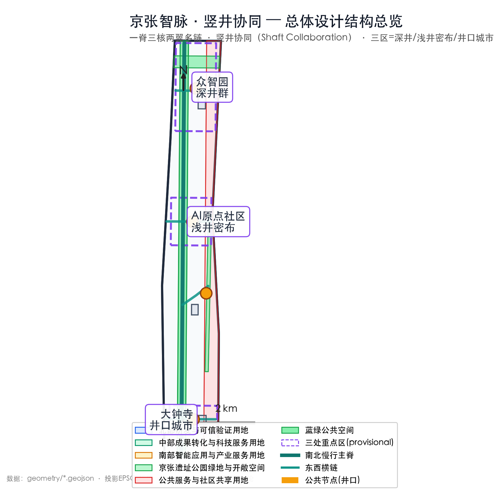
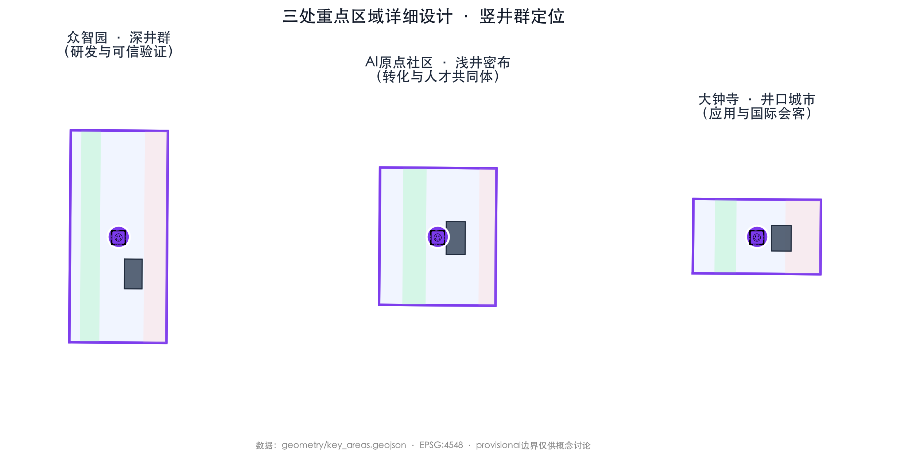
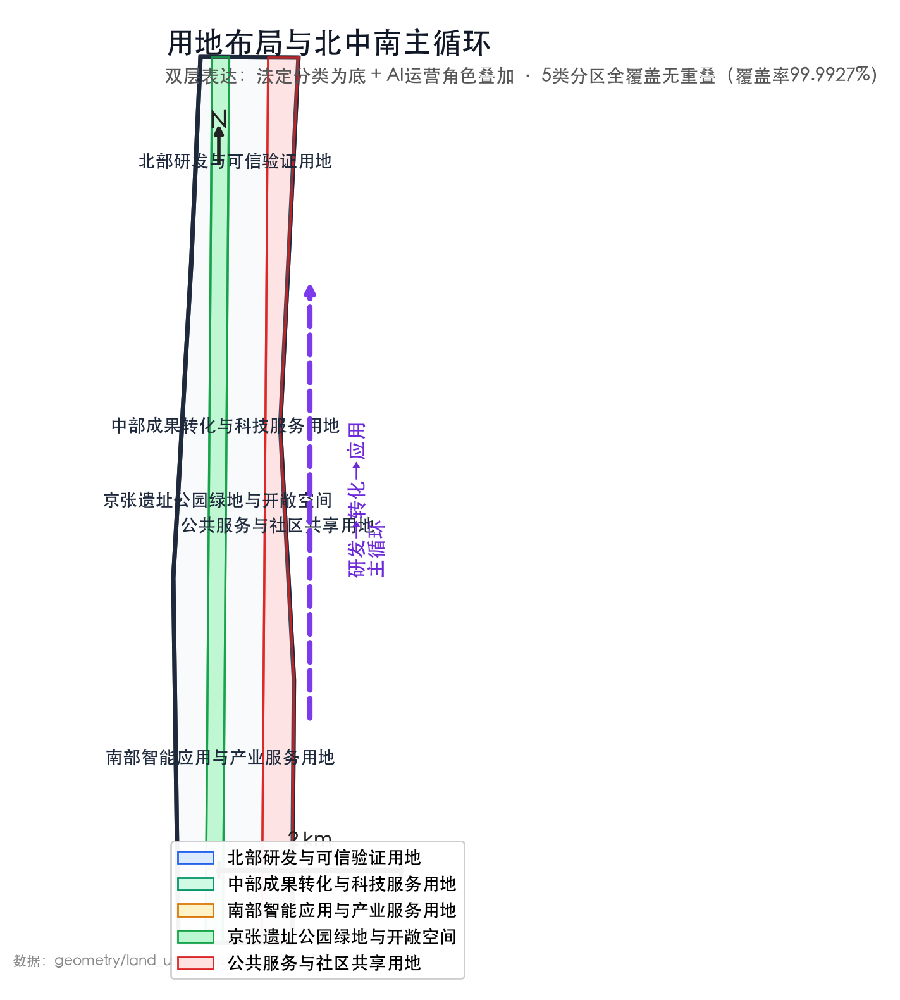
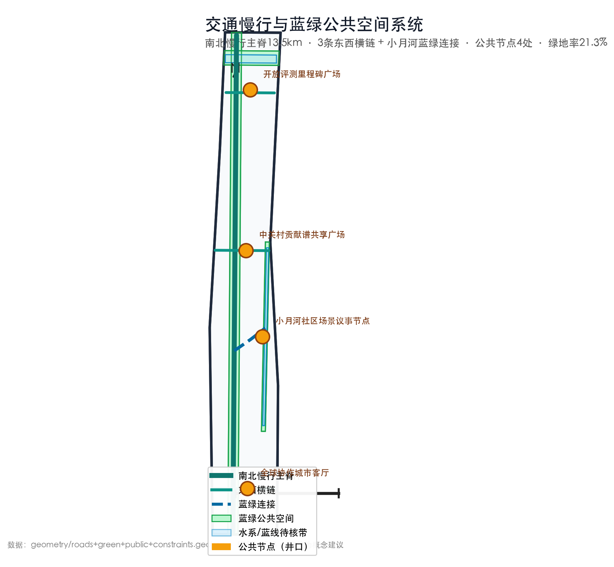
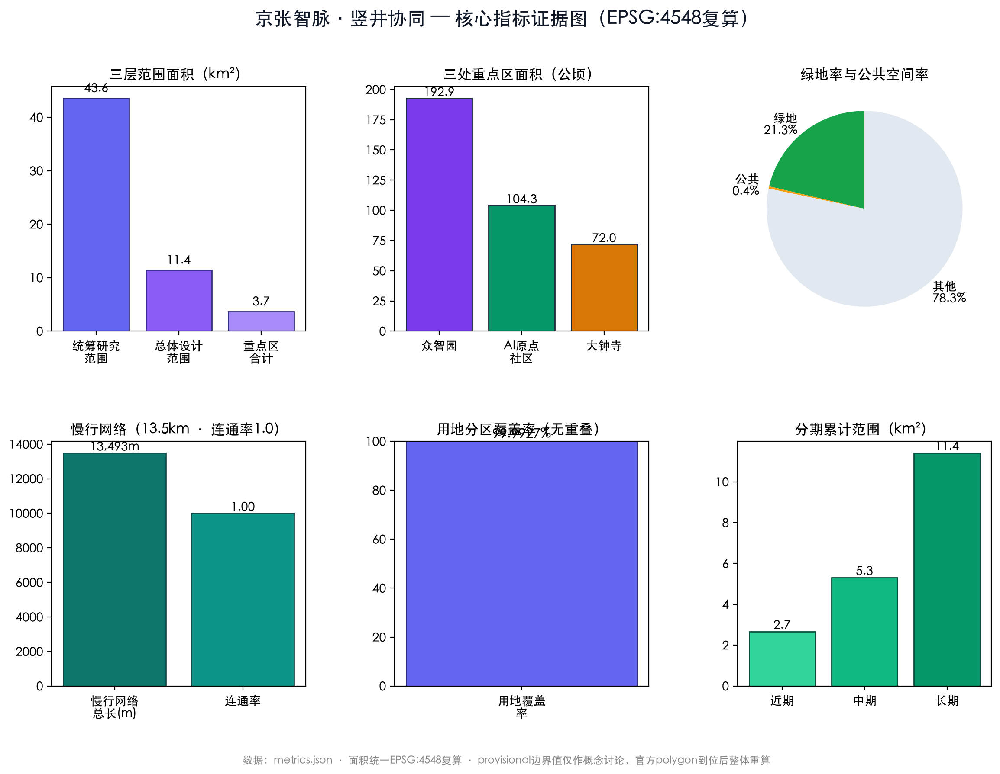

京张智脉 / Jing-Zhang AI Commons
以竖井协同（Shaft Collaboration）提升中途验证密度：JZ-VP与井深分级L1/L2/L3组织三区两翼的可验证工作面，VCI/VDR/TFC计量城市验证经济，七单元空间语法支撑可逆更新，JZ-GPoV与分权申诉机制防止协议俘获。
京张智脉 / Jing-Zhang AI Commons
> 本文本是面向后续专业深化的概念建议和参考方案，不替代法定规划、专业设计、政府审定或项目审批，也不构成投资、建设与运营承诺。
设计依据与资料清单
方案只采用仓库已登记的公开或清权资料。官方公告用于确认征集目标、三层工作范围的文字描述与约面积、三处重点区名称及任务，不用于推导精确红线、控规指标或工程条件。[source:DATA-SRC-OFFICIAL-ANNOUNCEMENT-20260509] 面向智能体任务书用于校准三大定位、五大功能、三区两翼和六项成果要求，但不具备空间控制效力。[source:DATA-SRC-AGENT-TASKBOOK-20260518] 临时边界仅供概念生成、关系讨论和后续图面复算占位，状态为 provisional，不作为正式面积和实施依据。[source:DATA-SRC-PROVISIONAL-BOUNDARIES-20260605]
本次完整设计包以 proposal.md 为人类可读主文本，并由 sources.json 记录来源等级，assumptions.json 记录待补条件，compliance_matrix.json 对应公告和六项任务，standard_matrix.json 对应专业标准，design_depth_matrix.json 对应用地、交通、风貌、重点区与实施深度。现有图层和指标已按当前 provisional 数据复算；取得清权官方底图后必须整体替换、重算并由规划、建筑、交通、市政、文保和法律团队复核。
证据来源登记（对应 sources.json）：[source:SITE-PACKAGE] [source:SOURCE-REGISTRY] [source:PROCESSED-FACT-PACK] [source:BOUNDARY-SOURCE] [source:KEY-AREA-SOURCE] [source:OFFICIAL-ANNOUNCEMENT] [source:AGENT-TASKBOOK]

三层范围工作框架
统筹研究范围约43.6平方公里，承担产业链、创新网络和区域协同研究；总体设计范围约11.4平方公里，承担空间结构、城市更新、交通蓝绿和公共服务统筹；三处重点区域合计约368.4公顷，承担可被专业团队继续深化的片区级场景设计。上述约值来自公告，不代表精确勘界结果。[source:DATA-SRC-OFFICIAL-ANNOUNCEMENT-20260509]
三层之间采用“战略—结构—节点”传导：统筹层定义研发、转化、应用的价值循环；总体层把循环投射为一条公共脊柱、三个功能核、两翼支撑和多条东西横链；重点区层再把功能转成共享设施、首层界面、慢行组织与运营场景。竖井协同在三层中只有一个作用：增加可进入、可复核、可退出的中途验证工作面，提高中途验证密度，而不替代任何层级的规划判断。现有临时 polygon 只帮助检查三层关系和南北顺序，不能据此判定地块权属、道路红线或建筑容量；取得正式边界后，应整体替换范围、重新叠合现状并复算全部面积。[source:DATA-SRC-PROVISIONAL-BOUNDARIES-20260605]
现状诊断：把“已知事实”与“待验假设”分开
当前公开资料不足以支撑传统规划中的完整现状底图，因此本稿不用模糊的“基地现状”包装推测，而是把诊断分为可核实事实、任务书给出的问题线索和必须补测的假设三类。[source:OFFICIAL-ANNOUNCEMENT] [source:BOUNDARY-SOURCE]
| 规划必答题 | 当前可复核内容 | 不得越过的结论边界 | 进入下一步的补测/核验 | | --- | --- | --- | --- | | 范围与功能结构 | 公告确认三层范围的文字描述、约面积、三处重点区名称与南北顺序 | provisional 边界不是官方红线，不能用于退界、强度、征拆或权属判断 | 取得清权官方红线、现状地形/地块/建筑测绘后，重做范围、容量和空间结构诊断 | | 城市更新 | 公告把低效空间、校园街区融合、三处重点区差异化更新列为任务 | 这些是“需研究的问题线索”，不是已完成的建筑质量或低效用地评估 | 逐栋调查建筑安全、使用、权属、历史价值与租赁影响，再形成保留/改造/拆除/新建比选 | | 交通与公共空间 | 公告指出慢行断点、站点连通、大钟寺四象限和非机动车秩序等待解设计任务 | 现有 roads.geojson 是概念连接线，不证明断点已现场测定，也不是道路红线或方案线位 | 用入口级步行网络、过街、坡度、时段客流、无障碍与物流调查建立断点台账 | | 市政容量与公共服务 | 公开资料只确认须研究传统设施与端侧算力、分布式能源等新型设施的融合 | 当前没有任何可用的水、电、热、排水、消防、通信、服务设施容量结论 | 由专业团队建立“峰值负荷—现状余量—临时接入—扩容条件—失效安全态”容量台账，UNKNOWN 不得解释为可用 | | 文保、蓝绿与风貌 | 公告确认京张铁路文化、清河/小月河和遗址公园是重要设计语境 | 未取得文保范围、建设控制地带、蓝线、行洪和绿地正式条件前，不得判断建设可行性 | 叠加有权来源的保护与蓝绿控制线，完成视线、尺度、防洪、生态与公众咨询复核 |
因此，本阶段的规划结论不是“已找到竖井点位”，而是形成一套可否证的选址与更新问题清单：任一边界、容量、安全、文保或权益前提为 UNKNOWN，对应竖井只能停留在不产生真实城市作用的井深分级 L1。
统筹研究范围产业与未来城市研究
**一句话主张：本方案只动一个变量——中途验证密度；以竖井协同（Shaft Collaboration）把公共脊柱与三区两翼组织成可进入的验证工作面，由 JZ-VP 与井深分级 L1/L2/L3 给出可携带证明和限时能力租约，由 VCI/VDR/TFC 计量城市验证经济，由七单元空间语法落地，再由 JZ-GPoV 与分权申诉机制约束协议本身。** AI 创新的公共价值取决于成果能否被共同验证；其余关于空间结构、用地布局、场景清单与运营机制的结论，都是降低验证进入门槛又防止验证权力集中的推论。
**术语锁：** 全文只使用以下四个上下位关系：“竖井协同 / Shaft Collaboration”是总体模型；“开井法 / Open-Shaft Method”只是其空间实施动词，不再作第二套协议名称；“JZ-VP”是唯一的消息与证明协议；“井深分级 L1/L2/L3”一律表示披露、受控测试、边界内持续服务的运行权限，不表示建筑等级、技术成熟度或法定认证。
总体概念：从竖井开凿到开放工作面
概念建议借用一条**尚待以铁路史/文保一手资料核实**的工程史类比：竖井可为长隧道增加中途工作面，使多支队伍并行推进、校准并贯通。在清权史料补齐前，本稿不把“八达岭隧道竖井开凿”当作已复核的遗产解说内容，只使用“增加中途工作面”这一组织逻辑。转译到 AI 时代，不是复刻工程形象，而是把封闭研发改造成可进入的“开放工作面”：众智园、AI 原点社区和大钟寺分别打开研发验证、成果转化与城市应用入口，两翼提供专业服务和真实反馈，京张公共脊柱让证据、问题与贡献持续回流。“智脉”由此成为多主体共同参与、彼此复核的公共智能基础设施。
核心概念“京张智脉”把铁路遗产从分隔性的线性空间转译为共享知识、公共服务和城市实验的 Commons，并以“竖井协同”作为贯穿三层的组织机制。其空间实施动词“开井法”是本方案对竖井增加工作面的当代原创转译名称，不是历史术语，也不指向遗产复原工程。中文名强调百年基础设施持续输送创新动能，英文名强调共同使用、共同治理和共同记忆。
**命名说明（概念建议）：** “智脉”不是泛指智慧技术走廊：“智”指经开放验证、公众反馈和专业复核形成的共同智能，“脉”指让证据、贡献与纠错沿京张南北持续循环的公共接口。为回应“智脉”同名风险，提出三组备选品牌，最终名称仍待共创评审：
- **京张智脉·JZ MERIDIAN**：保留原名，以“经线”强化公共坐标感。
- **京张见光·DAYLIGHT COMMONS**：取“中途见光”，强调及早开放验证。
- **京张共证·JZ PROVING COMMONS**：以共同验证和可追溯纠错为承诺。
视觉识别建议采用“**一轨多井**”母题：一条水平轨线代表百年京张与创新长隧道，沿线竖井开口代表向城市开放的验证工作面；可用井深分级 L1/L2/L3 的刻度表达披露、受控测试与边界内持续服务的当前运行权限。Logo、字体和色彩均应重新绘制或采用明确授权素材，不附带任何未清权第三方资产。
三大定位被整合为同一叙事：百年京张文化带提供时间纵深，都市AI生活体验带提供公共可感知性，AI融合创新带提供产业动力。五大功能不各自造园，而进入一个闭环：全栈自主创新产出可验证技术，世界级创新生态组织人才与服务，AI+场景形成真实反馈，智能化活力城市保障日常体验，AI治理把安全、伦理和公众参与写入准入规则。[source:DATA-SRC-AGENT-TASKBOOK-20260518]
空间上，建议将众智园、AI原点社区、大钟寺分别作为研发、转化、应用端。主循环按“研发—测试—转化—应用—反馈—再研发”组织：科技服务翼在前三环提供知识产权、标准、人才和国际网络，小月河翼在测试、应用与反馈环提供居民议题、生态检验和服务评价；公共脊柱运营平台汇总需求，第三方评估后再回传研发端。
全球案例建议选取六个对象作下一阶段同口径研究：波士顿Kendall Square关注高校—产业步行联系；多伦多MaRS关注转化服务；新加坡one-north关注研发与生活复合；伦敦King’s Cross关注遗产更新和公共空间；巴黎Saclay关注跨机构协同；深圳南山关注快速产品化。此处只提出对标方向，不据此移植指标；后续须补齐一手来源，并检验其治理、租金、公平和可复制条件。
双语术语与国际可比框架
**International one-line pitch:** *Jing-Zhang AI Commons is a distributed urban assurance network that brings verification closer to where AI is developed, tested and used, combining an interoperable protocol, measurable verification economics, a reversible spatial grammar and anti-capture governance.* 这一英文表述用国际评委可比较的“保证—沙盒—城市测试床—元治理”语汇解释京张原型，不声称符合任何未经核对的国际标准、认证或外国法规。[source:AGENT-TASKBOOK]
| 全文统一中文 | 统一英文 | 可操作定义 | 供国际横向评估的类型对应（非等同/非认证） | | --- | --- | --- | --- | | 竖井协同 | Shaft Collaboration | 把封闭创新链分成多个可进入、可复核、可退出的中途工作面；“竖井”不默认意味地下开挖 | distributed urban testbed / living-lab network | | 中途验证密度 | Mid-course Verification Density | 单位网络中可达验证节点的数量、井深分级与步行可达性的联合量 | accessibility-adjusted testbed density | | 井深分级 L1/L2/L3 | Verification Depth Levels L1/L2/L3 | L1 披露/离线演示，L2 限定包络内受控测试，L3 有效 PoV 和能力租约边界内的持续服务 | staged regulatory sandbox / bounded deployment states | | 京张验证协议 | Jing-Zhang Verification Protocol (JZ-VP) | 可跨节点校验的消息、证据、签名、状态和回滚契约 | interoperable assurance workflow | | 验证证明 / 能力租约 | Proof of Verification (PoV) / Capability Lease | PoV 是边界内的可复算证据包，不是安全证书；租约是限时、限域、最小权限的可撤销运行权 | auditable assurance case / time-bound authorization | | 城市验证经济学 | Urban Verification Economics | 用 VCI/VDR/TFC 与纠错成本曲线评估验证能力、可达密度、证据复用和晚期失败摩擦 | innovation-infrastructure capability accounting | | 七单元竖井空间语法 | Seven-unit Shaft Spatial Grammar | 井口、井筒、井台、井巷、井裙、井标、井眼组成可逆的空间—协议构件库 | modular and reversible urban testbed typology | | 治理有效性证明 | Governance Proof of Validity (JZ-GPoV) | 对规则修订、费用、回避、紧急权力和裁决本身生成可申诉的元证明 | meta-governance audit trail |
因此，国际可比性不依赖“是否理解京张铁路故事”，而可沿四个通用维度评审：证明能否跨节点复算，验证能力与纠错成本能否计量，运行边界能否被空间感知且退回，规则制定者能否被独立审计与申诉。京张历史原型提供文化记忆，这四个维度提供跨语境的评价接口。
总体设计范围城市更新与控规深度城市设计
本节回应控规深度所要求研究的用地、设施、交通、风貌和实施维度；因控制条件尚缺，本稿实际深度仍是概念策略，不形成控规成果。
总体结构建议以**竖井协同（Shaft Collaboration）的空间实施法——开井法（Open-Shaft Method）**组织“一脊三核、两翼多链”：京张遗址公园公共脊柱是共享规则与成果回流的主接口；三核是同时打开的研发、转化、应用工作面；两翼分别输送专业服务与社区生态反馈；多条东西横链让高校、社区、轨道站点和创新载体进入同一验证网络。其最小运营闭环建议为“公开申请—边界记录—受控验证—多方复核—回流或退出”：一脊承载申请、记录与结果回流，三核承载分阶段受控验证，两翼组织专业与社区复核，多链提供可进入的公共路径；申请者、运营平台、专业责任人、社区或第三方分别留痕。公共脊柱优先承载步行骑行、文化解释、非消费性停留和低风险 AI 体验；更新采用“空间先开放、服务先共享、场景先试点、建设后决策”的低扰动路径。真正的协议层只有 JZ-VP，不与空间方法混称。[source:DATA-SRC-OFFICIAL-ANNOUNCEMENT-20260509]
概念更新对象分为四类：铁路及历史价值要素优先保护研究；结构条件较好且功能可适配的建筑优先再利用；首层封闭、慢行断裂和消极边界优先做可逆微更新；新增空间仅在控规、权属、文保、消防和市政条件明确后论证。公共界面建议配置共享会议、样机展示、社区服务、遮阴休息与夜间照明，并以租赁可负担性、开放时长和公众满意度监测是否发生创新排斥。容积率、高度、总建筑规模和具体拆改留均留待法定程序和专项评估确定。

重点区域详细设计
三处重点区统一使用井深分级 L1/L2/L3：每个片区都必须保留 L1 公开披露、责任入口与投诉通道；只有取得对应空间、市政、安全、数据与专业前提的具体场景，才可进入 L2；L3 也只对 PoV 明示的运行包络生效，不能把整个片区评为“L3”。
**众智园AI自主创新加速区——研发与可信验证核。** 概念建议形成“开放工程院＋花园测试庭院”：围绕模型、芯片适配、机器人、端侧设备和安全治理组织共享实验、公开评测与小批量验证；京张脊柱与清河方向形成公共界面，封闭测试区与公共游憩区物理和时段分离。建筑以可改造研发空间、共享中试接口和首层展廊为方向；概念性准入条件建议包括许可、安全员接管、事件记录和退出机制。
**北京AI原点社区——转化与人才共同体核。** 概念建议以“校园成果到城市服务的第一公里”为主线，设置开源发布、成果孵化、知识产权与法律服务、青年协作、人才生活和社区共用设施；通过舒适慢行连接五道口、清华东路西口等轨道节点方向。更新优先使用存量首层和小尺度空间，保护居民日常通行与小商户生态，不把人才服务变成封闭专享设施。
**大钟寺AI产业聚集区——应用与国际会客核。** 概念建议围绕站点四象限改善步行识别、非机动车停放和公共界面，导入智能体、智能终端、数字内容、无障碍服务及国际交流场景；保留不消费也可停留的城市客厅。企业展示、数字资产和内容服务应标明责任主体、数据用途、授权方式和投诉入口。三处范围当前均为临时推定，只能表达定位与关系，不能形成地块或工程结论。[source:DATA-SRC-PROVISIONAL-BOUNDARIES-20260605]
AI 创新生态、人才画像与 AI+ 场景
五类核心用户画像是：需要共享工具和声誉机制的开发者；需要验证、法务和客户接口的初创企业；需要跨校协作和转化服务的高校师生；需要安静、安全、便利服务的居民与小商户；需要多语种、无障碍和家庭服务的国际人才及访客。画像只是服务假设，不建立个人画像库，后续调研应自愿、匿名、最小必要并允许撤回。[source:DATA-SRC-AGENT-TASKBOOK-20260518]
| 场景卡 | 建议空间与对象 | 数据边界、人工复核与运营 | | --- | --- | --- | | 01★开放模型评测 | 众智园；开发者、企业 | 仅用授权模型与公开基准；第三方复核争议 | | 02★机器人低速测试 | 众智园受控庭院；研发团队 | 分级许可、现场安全员、随时停止 | | 03★可信数据沙盒 | 科技服务翼；企业、高校 | 最小字段、用途限定；伦理和法律复核 | | 04端侧算力驿站 | 公共脊柱节点；开发者 | 只采集聚合能耗；运维人员确认调度 | | 05无障碍慢行助手 | 东西横链；老年人、访客 | 自愿反馈，不做人脸识别；人工核验障碍 | | 06社区健康导航 | 原点社区；居民 | 不诊断、不留病历；医护人员最终判断 | | 07学习与就业助手 | 原点社区；学生、青年 | 用户掌控记录；教师与就业顾问复核 | | 08法律与知识产权助手 | 科技服务翼；团队 | 使用公开法规或授权文档；专业人员签核 | | 09京张记忆导览 | 遗址公园；居民、游客 | 只用清权史料；史实编辑与纠错机制 | | 10智能生活体验厅 | 大钟寺；居民、访客 | 匿名反馈、清晰标识；线下客服和申诉入口 | | 11场景需求议事台 | 小月河翼；居民、运营者 | 公开议题不采集身份轨迹；社区主持复核 | | 12国际协作会客厅 | 大钟寺；国际人才 | 报名信息最小化；人工接待与反骚扰规则 |
★为三项产业测试验证场景。全部场景卡均从井深分级 L1 披露起步，不因场景名称或空间落位自动获得 L2/L3；信息决策类 AI 只作辅助；具有物理动作的自主系统限于受控环境并保留安全员接管。涉及健康、教育、法律、交通和公共资源的判断须有责任人、人工复核、解释、申诉与退出通道。

用地、建筑规模与拆改留方案
用地策略建议采用“法定分类为底、AI角色叠加”的双层表达：科研、教育、商业服务、社区服务、道路、公园绿地等沿用规范分类，研发、验证、转化、体验只是运营标签，避免自造法定用地类别。产业空间与人才生活空间应混合到步行可达尺度，并设置可短租、可分隔、可恢复的弹性单元，以支持团队从原型到成长的不同阶段。[source:DATA-SRC-OFFICIAL-ANNOUNCEMENT-20260509]
建筑处置建议执行“调查—价值评估—方案比选—公众沟通”四步：历史与公共价值要素优先保留，适配性较好的空间优先轻改造，存在安全或功能问题的对象经专项鉴定后再判断，新建量在容量、生态和交通承载核定后研究。当前缺少现状建筑、权属及控制条件，因此不提供建筑面积、强度、高度或单体拆除清单；临时边界也不用于计算相关比例。[source:DATA-SRC-PROVISIONAL-BOUNDARIES-20260605]

交通、轨道、市政与公共服务设施
交通优先序建议为“轨道到达—步骑串联—公交接驳—服务车辆分时—测试车辆受控”。建议由南北公共脊柱串联步骑体验，东西横链重点处理站点、校园、社区、园区之间的断点；众智园关注五环与清河方向联系，原点社区关注近校站点换乘，大钟寺关注站点四象限和非机动车秩序。桥隧、路口改造、道路断面与轨道接口仅作为问题清单，须经交通和安全专项论证。[source:DATA-SRC-OFFICIAL-ANNOUNCEMENT-20260509]
市政与新型基础设施建议分四层：水电热、排水、消防等安全底座；通信、定位、充电和环境感知的边缘设施；授权目录、访问日志与能耗计量构成的可信数据层；预约、告知、事件上报和人工客服构成的场景接口层。公共服务建议设置线上线下双入口，兼顾居民、青年、学生、企业、游客和行动不便者。容量、管线迁改与设备选型均待专业复核。
**市政容量闸门（概念建议）。** 竖井协同不把“有一个场地”误当作“有容量可运行”。每个场景应先建立系统级容量台账，再与井深分级联动；下表只规定“需要什么证据才能升级”，不冒充容量测算。[source:OFFICIAL-ANNOUNCEMENT]
| 容量系统 | L1 可做 | 进入 L2 的建议必需证据 | 进入/保持 L3 的建议必需证据 | UNKNOWN 时默认动作 | | --- | --- | --- | --- | --- | | 电力、热力、充电与能耗 | 离线说明、负荷清单和能耗仿真 | 签章或有效的临时接入条件、分项计量、峰值上限、过载断开和备用停止方案 | 经正式程序确认的接入与容量、连续计量、峰值/故障告警、应急演练 | 不得启动主动设备或预设扩容工程 | | 给排水、防洪排涝与海绵接口 | 室内/无水演示、场地标高与风险调查 | 降雨/排水条件复核、不影响行洪的可逆构造、积水停机条件 | 正式接入、运维责任、实时告警和极端条件安全演练 | 优先使用同层、无开挖方案；关闭可能影响排水的场景 | | 消防、结构、疏散与人工接管 | 人流/设备清单和纸面风险评估 | 场地与设备安全复核、独立急停、双向疏散、安全员视线与演练回执 | 持续有效的专业条件、定期演练、事件日志、撤权至安全态的执行回执 | 不得进入 L2；已运行场景转 SUSPENDED | | 通信、端侧算力、数据与网络安全 | 离线模型和数据字段说明 | 最小必要数据、本地/断网失效态、访问控制、日志和延迟/容量上限 | 带责任主体的持续运维、网络/算力容量观测、密钥撤销、断网与泄露演练 | 转离线或停止主动能力，不把“可连网”当作“可合规运行” | | 交通、物流、停车与公共服务 | 入口、对象、时段和无障碍需求清单 | 分时物流、人车分流、排队上限、不占用公众必经路和线下替代服务 | 真实客流、服务负荷与投诉数据的持续复核，超载分流与恢复方案 | 不占用公共路权或缩减基本服务，只保留 L1 入口 |
蓝绿空间、公共空间与城市风貌
京张遗址公园被建议作为“公共脊柱”而非技术展廊：连续绿荫、无障碍步道、骑行、饮水、卫生间、安静停留和儿童友好空间是底盘，AI场景以可关闭、可解释、可维护的小型组件嵌入。小月河翼承担生态与生活反馈，清河方向强化北段研发区与滨水公共空间的联系；文保、蓝线、绿地和防洪条件未核实前，不提出跨越或地下工程判断。[source:DATA-SRC-OFFICIAL-ANNOUNCEMENT-20260509]
三处AI朝圣与荣誉节点建议为：北部“开放评测里程碑”，展示可复核的技术贡献；中部“中关村贡献谱”，以授权和可撤回方式记录开源、标准与公共服务贡献；南部“全球协作会客厅”，持续承载开发者交流。文化叙事为“从铁路连接城市，到开放协作连接智能时代”；导视以轨枕节奏、里程刻度和开放括号构成，中文为主并提供英文信息。地标价值来自内容更新和公共制度，不依靠超尺度造型，也不表述为已批准建设。[source:DATA-SRC-AGENT-TASKBOOK-20260518]
更新项目清单、实施政策与分期计划
分期不预设公历年限，统一与 geometry/phasing.geojson 的 near_term / mid_term / long_term 三个累计概念阶段对应；“近期”不等于已批准近期建设，“长期”也不是强制建成时点。以下是更新项目包与升级门槛的参考方案，任何一阶段都可因前提不足而停止、缩小或回退。[source:DATA-SRC-AGENT-TASKBOOK-20260518] [data:geometry/phasing.geojson#PROV]
| 概念分期 | 更新项目包（均为建议） | 井深分级与空间成果 | 进入下一阶段的建议硬门 | 失败时的保留/退出 | | --- | --- | --- | --- | --- | | 近期 near_term | R-01 官方边界与现状底图补齐；R-02 遗产/公共空间资产调查；R-03 慢行断点与市政容量台账；R-04 社区需求议事和三类测试的纸面预登记 | 全带以 L1 披露界面、责任入口和可逆井口原型为主；不授予真实主动作用 | 官方/清权边界、现状建筑与权属核查、专业容量台账、文保/蓝绿/消防前提、公众影响记录均形成可核验版本 | 保留调查、慢行问题清单、公共座椅/遮阴/导视等普惠改善；拆除未启用的场景插件 | | 中期 mid_term | R-05 众智园共享验证平台；R-06 原点转化服务节点；R-07 大钟寺城市客厅；R-08 独立验证、证据保管和申诉的共享服务 | 只对前提完整的具体场景开放 L2 井筒/井台；其他空间继续保持 L1 | 完整 PoV 观察窗、独立复算、无未结关键事件、容量与安全条件持续有效、社区影响与补救复核通过 | 撤销能力租约，设备和围挡按回滚句拆除，空间退回 L1 公开界面或普通公共用途 | | 长期 long_term | R-09 跨三区的设施预约、证明互认、知识贡献、场景反馈与绩效公开；R-10 按需扩展的主链井口网络 | 仅符合持续服务门槛的场景进入 L3；全带始终保留 L1/L2/L3 并存，不追求“全部 L3” | VCI/VDR/TFC 的观测值显示能力与复用改善且治理健康度未恶化；市政、安全、法定与权益前提持续有效 | 可退回 L2/L1 或退役；保留慢行、蓝绿、公共服务和可核验历史，不以技术场景停用为由撤回普惠更新 |
三期关系是“证据和公共底盘累计、运行权随时可回退”，不是先画完整建设蓝图再分年铺开。这一口径与三个分期 GeoJSON 的 cumulative=true 一致，也避免在责任主体、资金、容量和审批尚未确定时虚构开发时序。
治理建议采用“理事会定规则、运营平台管设施、社区议事提需求、第三方做评估”的责任框架；公共投入、服务收入和社会赞助仅作为待测算的资金组合。年度运营建议采用“四季一账本”：春季开源维护、夏季城市验证、秋季Jing-Zhang AI Commons Week、冬季公共价值复盘；以开放成果、合作比例、居民满意度、复核时长、安全闭环和后续转化评估。活动品牌、预算、招商和时间表均待深化。
专业标准响应（对应 standard_matrix.json）：[standard:PROJECT-OFFICIAL-ANNOUNCEMENT] [standard:PROJECT-AGENT-OPEN-CALL-TASKBOOK] [standard:MOHURD-URBAN-DESIGN-MEASURES] [standard:MOHURD-CONTROL-DETAILED-PLANNING] [standard:MNR-LAND-USE-CLASSIFICATION-GUIDE]

指标体系、面积复算与合规矩阵
指标建议分为空间、创新、体验、治理四组。空间组包括三层范围面积、公共空间连续率、慢行断点消除率、无障碍覆盖率和可负担共享空间比例；创新组包括开放测试数、跨机构项目数、开源成果复用数和从验证到应用的转化时长；体验组包括公共空间开放时长、居民与访客满意度、线上线下双入口覆盖率；治理组包括授权完整率、人工复核响应时长、申诉闭环率、安全事件率与整改完成率。[source:DATA-SRC-AGENT-TASKBOOK-20260518]
计算口径建议公开：连续率＝已连通长度/规划检查长度，断点消除率＝完成复核点数/登记点数，开放率＝实际开放时长/公开计划时长，闭环率＝按期结案数/有效事件数。公告约面积只用于范围认知；临时 polygon 复算结果单列为低置信度的计算产物，不与法定指标或现状实测混用。[source:DATA-SRC-OFFICIAL-ANNOUNCEMENT-20260509] [source:DATA-SRC-PROVISIONAL-BOUNDARIES-20260605] 本完整包的合规矩阵已逐项覆盖公告任务与 agent.1—agent.6，标准矩阵已记录依据与缺口，深度矩阵已把判断映射到正文、图层、指标和专业复核责任。
核心指标已复算并登记于 metrics.json：[metric:coordinated_research_area_sqm] [metric:overall_design_area_sqm] [metric:site_area_sqm] [metric:key_detailed_design_area_sqm] [metric:key_area_zhongzhiyuan_sqm] [metric:key_area_ai_origin_sqm] [metric:key_area_dazhongsi_sqm] [metric:key_area_count] [metric:land_use_coverage_ratio] [metric:green_space_area_sqm] [metric:green_ratio] [metric:public_space_area_sqm] [metric:public_space_ratio] [metric:slow_mobility_network_length_m] [metric:slow_mobility_connectivity_ratio] [metric:building_footprint_area_sqm] [metric:phase_near_area_sqm] [metric:phase_mid_area_sqm] [metric:phase_long_area_sqm]
设计深度覆盖（对应 design_depth_matrix.json）：[depth:existing_conditions_diagnosis] [depth:three_level_scope_framework] [depth:overall_spatial_structure] [depth:land_use_layout] [depth:development_intensity_controls] [depth:height_massing_character] [depth:retain_renovate_demolish] [depth:traffic_rail_slow_parking] [depth:mobility_network] [depth:municipal_new_infrastructure] [depth:blue_green_public_space] [depth:three_key_area_detailed_design] [depth:renewal_project_list] [depth:phasing_implementation] [depth:implementation_phasing] [depth:metrics_recalculation] [depth:risk_missing_data]
空间数据图层（geometry/*.geojson，均为provisional概念图层）：[data:geometry/site_boundary.geojson#PROV] [data:geometry/key_areas.geojson#PROV] [data:geometry/land_use.geojson#PROV] [data:geometry/buildings.geojson#PROV] [data:geometry/roads.geojson#PROV] [data:geometry/green_space.geojson#PROV] [data:geometry/public_space.geojson#PROV] [data:geometry/phasing.geojson#PROV] [data:geometry/constraints.geojson#PROV]
京张验证协议（JZ-VP）：从机制到协议
JZ-VP（Jing-Zhang Verification Protocol）建议把竖井协同中的“证据可携带”从空间组织要求翻译为城市 AI 场景之间可共同实现的底层契约：每口“验证竖井”既是物理工作面，也是一个能够接收同一类消息、核验同一类证明、执行同一套暂停与回滚语义的协议节点。它不以新建一条区块链或一个中心化 App 为前提；只要参与节点实现共同的消息契约和证明校验器，场景即可携带验证历史跨节点迁移，而不必重复接受一套不可比较的评审。本节沿用前文的统一术语：L1/L2/L3 始终是井深分级的运行权限状态。以下均为 JZ-VP/0.1.0-draft 概念协议建议，具体责任主体、密码算法、阈值、留存期限和法律效力仍须由有权部门及专业团队依法依规确定；协议凭证不替代法定规划、行政许可、专业审查或政府审批。[source:OFFICIAL-ANNOUNCEMENT] [source:AGENT-TASKBOOK]
最小可行 JZ-VP：先跑五张单，再决定是否工程化
JZ-VP 的目标是减少重复且不可比的审查，不是为每个低风险场景建一套密码基础设施。最小可行版可先由普通表单、文件哈希和带责任的人工签章实现，只保留五项不可缺少的契约：
1. SceneManifest：谁负责、用哪个制品、影响谁、在什么时空/数据边界内做什么； 2. CriteriaCommit：测试前冻结验收标准、失败条件和缺失值处理； 3. EvidenceIndex：指向原始证据、来源、时间、保管者和访问级别，不要求敏感数据上链； 4. StateReceipt + CapabilityLease：记录当前井深分级与限时、限域、可撤销权限； 5. Challenge/RollbackReceipt：提供线上线下异议、人工急停、退回安全态和现实损害补救的可追踪回执。
| 建议实现级 | 适用条件 | 最小实现 | 不应默认引入 | | --- | --- | --- | --- | | 基础版 | L1 披露、无敏感数据、无物理动作、无公共资源分配 | 五张单的可读文件，普通签章与公开查询号 | 分布式账本、Merkle 树、多机构密钥基础设施 | | 受控版 | L2 且有真实人/物/设施作用 | 制品摘要、预登记标准、带时间戳的证据目录、独立复核、可执行急停与限时租约 | 与本场景无关的全字段、全角色、全城同步 | | 高影响/跨节点版 | L3、高影响场景或证明需跨节点携带 | 完整角色覆盖、证据根/包含证明、见证检查点、版本迁移、JZ-GPoV 与多阶申诉 | “已签名即已安全”的自动放行逻辑 |
每增加一个字段、签名角色或密码组件，都应说明它消除了哪一个可验证风险，并公开小团队、社区与无障碍用户的时间/费用负担。若普通文件与人工程序已足以形成可追踪、可撤销、可申诉的结果，就不应为技术完整性强制升级。
四层协议栈与不可越界原则
| 层级 | 处理对象与建议接口 | 形成的可验证输出 | 失败时的默认动作 | | --- | --- | --- | --- | | P0 物理层（Physical） | 场地/设备/模型实例、限定时空、传感或人工观察、网络与电源状态、人工接管和安全停机接口；每个运行实例绑定 sceneId + deploymentId + artifactHash | EvidenceLeaf（证据叶）、EnvironmentSnapshot（环境快照）、SafeStopReceipt（安全停机回执） | 标识、时钟、运行边界或停机能力不可验证时关闭主动能力，只允许离线检查 | | P1 语义层（Semantic） | SceneManifest、场景风险档案 Profile、指标与验收谓词、数据分类、事件严重度、空间/规划绑定、统一字段字典与确定性序列化 | 机器可读的场景声明、预登记验收标准、证据目录和对外脱敏摘要 | 未知必填字段、单位或版本拒收；未知可选字段原样保留但不得参与放行判断 | | P2 共识层（Consensus） | 基于角色的多方签名、证据根校验、前序证明引用、状态转移和冲突检测；“共识”指职责角色对同一事实包分别背书，不等同于多数投票 | PoV、限时能力租约、当前证明头 povHead、暂停/回滚回执 | 缺少任一必需角色、前序哈希冲突或证据过期时保持原状态；安全事件可先单方急停、后补多方复核 | | P3 治理层（Governance） | 协议版本、风险档案、角色名册、利益冲突、法定文件引用、申诉仲裁、审计与留存策略 | 签名的 PolicyBundle、角色授权、争议裁决、版本迁移证明 | 规则冲突或法定前提状态为 UNKNOWN/EXPIRED/SUPERSEDED 时不得推定许可，相关运行实例进入冻结或暂停 |
四层遵守三条不可越界原则：物理层采到数据不等于语义层已经解释；语义层指标达标不等于共识层已经签名；协议层形成 PoV 不等于治理层或法定程序已经批准。公开账本只建议保存证明摘要、责任入口与状态，不公开个人信息、商业秘密或敏感原始数据；原始证据应留在分级授权的证据库中。
消息契约：谁在何时对什么负责
所有消息建议使用确定性序列化的 UTF-8 JSON（生产实现也可映射为等价二进制编码），公共信封字段保持稳定，业务差异进入 payload。接收节点先验签、再校验模式、再检查时序与权限；重发同一 messageId 必须幂等，发现同一 sequence 的不同载荷则产生 SEQUENCE_CONFLICT 并冻结该场景。
| 字段 | 类型 | 约束与用途 | | --- | --- | --- | | jzvpVersion / profileRef | string | 分别固定核心协议与场景风险档案版本；证明形成后不可就地改写 | | messageType / messageId | enum / string | 消息类型与全局唯一标识；重复消息返回原回执 | | sceneId / deploymentId | string | 场景稳定身份与具体运行实例身份，禁止用名称代替 | | sequence / nonce / issuedAt / expiresAt | integer / string / datetime | 单调序号、单次随机数、签发时间和有效期；用于防重放，过期消息不得产生新状态 | | actor.id / actor.role / keyId | string | 绑定治理层角色名册和签名密钥；角色授权必须覆盖该消息类型 | | previousMessageHash / prevProof / policyRef | digest / string | 分别指向上一消息、当前 PoV 头和适用政策包，防止删改消息或基于旧状态并发放行 | | payload / payloadHash | object / digest | 载荷与其摘要；载荷至少声明对象、主张、边界和预期状态变化 | | evidenceRefs[] | array | 证据摘要、类型、采集者、时间窗、访问级别与留存规则引用 | | signatures[] | array | 一个或多个分离签名；签名字节固定为 H("JZ-VP-MSG" || jzvpVersion || Canon(envelope_without_signatures) || payloadHash)，算法、密钥状态与角色由版本化注册表约束 |
建议的最小消息集合如下。只有 STATE_COMMIT、SUSPEND_COMMIT、ROLLBACK_PREPARE、ROLLBACK_COMMIT 与 RETIRE_COMMIT 改变场景状态；LEASE_GRANT/LEASE_REVOKE 只改变某个运行实例的主动能力，其余消息只形成候选事实，避免一条观测消息意外获得放行能力。需要多角色共同确认的消息可携带多个 signatures[]，也可引用先前独立提交且仍有效的 ATTEST；接收节点按 Req(profile,messageType) 校验角色覆盖，不允许一把密钥占多个互斥席位。
| 消息类型 | 发送者 | 协议效果 | | --- | --- | --- | | CAPABILITY_HELLO | 任一节点 | 协商可读版本、档案和算法，不改变场景状态 | | SCENE_DECLARE | 场景责任方 | 提交场景清单、影响对象、模型/设备摘要、数据边界和责任入口，申请 L1 | | CRITERIA_COMMIT | 责任方＋独立验证方 | 在测试前冻结验收谓词、观察窗口、失效条件和回滚目标，防止事后挑指标 | | EVIDENCE_COMMIT | 证据采集者/保管方 | 追加证据叶摘要；更正采用新叶和 supersedes，不得覆盖旧叶 | | ATTEST | 被授权角色 | 对责任声明、环境一致性、专业复核或公共利益影响分别签名 | | STATE_PROPOSE / STATE_COMMIT | 责任方提议 / 协议运营方提交 | 校验 PoV 后执行 L1、L2、L3 或续期的确定性状态转移 | | LEASE_GRANT / LEASE_REVOKE | 协议运营方 / 安全责任人或运营方 | 把有效 PoV 编译为限时、限域、最小权限的能力租约，或立即撤销该实例的主动能力 | | HEARTBEAT | 运行运营方 | 更新证据新鲜度、实例摘要、未决事件和下次到期时间；不等于自动续期 | | INCIDENT_OPEN / INCIDENT_CLOSE | 任何授权观察者 / 独立复核方 | 开启事件可触发冻结或急停；关闭必须附整改与受影响对象补救证据 | | CHALLENGE_OPEN / CHALLENGE_RESOLVE | 公众、专业方或参与主体 / 仲裁角色 | 对证据、程序、利益冲突或法定前提提出异议并形成追加式透明日志裁决回执 | | SUSPEND_COMMIT | 安全责任人或运营方 | 立即撤销主动运行权；紧急安全暂停允许单签，事后必须补充复核 | | ROLLBACK_PREPARE / ROLLBACK_COMMIT | 运行方 / 运营方＋独立验证方 | PREPARE 原子撤销租约并将 SUSPENDED 转为 ROLLING_BACK；COMMIT 核验撤权回执、安全态与残余风险后退出回滚态并追加新证明 | | POLICY_PUBLISH / MIGRATE / RETIRE_COMMIT | 规则维护方 / 场景责任方 / 运营方 | 发布规则、显式迁移或终止场景；均不得改写历史 PoV |
统一拒绝回执采用 NACK，错误体固定为 {code, message, retryable, details}。建议至少定义 SCHEMA_INVALID、SIGNATURE_INVALID、SEQUENCE_CONFLICT、PREV_PROOF_MISMATCH、ROLE_QUORUM_MISSING、EVIDENCE_STALE、POLICY_VERSION_MISMATCH、LEGAL_PREREQUISITE_MISSING、TRANSITION_FORBIDDEN、ROLLBACK_UNREADY 与 CHALLENGE_OPEN，使不同竖井节点给出可比较的失败原因。
下面是从 L2 申请 L3 的消息示例；尖括号均为待真实流程生成的占位符，不代表已有主体、审批、证据或签名：
``json { "jzvpVersion": "0.1.0-draft", "profileRef": "jzvp:profile:<profile-id>@<version>", "messageType": "STATE_PROPOSE", "messageId": "<uuid>", "sceneId": "jzvp:scene:<stable-id>", "deploymentId": "jzvp:deployment:<instance-id>", "sequence": "<monotonic-integer>", "nonce": "<single-use-random-value>", "issuedAt": "<rfc3339-time>", "expiresAt": "<rfc3339-time>", "actor": {"id": "<registered-actor-id>", "role": "SCENE_OWNER"}, "previousMessageHash": "sha256:<previous-message>", "prevProof": "sha256:<current-pov-head>", "policyRef": "jzvp:policy:<policy-id>@<version>", "payload": { "fromState": "L2_CONTROLLED", "toState": "L3_OPERATIONAL", "manifestHash": "sha256:<scene-manifest>", "artifactHash": "sha256:<model-code-device-bundle>", "criteriaHash": "sha256:<pre-registered-criteria>", "evidenceRoot": "sha256:<evidence-merkle-root>", "operatingEnvelope": {"spaceRef": "<authorized-space>", "timeRef": "<window>", "populationRef": "<affected-group>", "dataRef": "<data-boundary>"}, "authorityBindings": ["<planning-or-permit-reference>"], "rollbackCapsuleHash": "sha256:<rollback-capsule>" }, "payloadHash": "sha256:<canonical-payload>", "evidenceRefs": [{"digest": "sha256:<evidence>", "access": "RESTRICTED_AUDIT", "retentionRuleRef": "<rule-id>"}], "signatures": [ {"role": "SCENE_OWNER", "alg": "<registered-algorithm>", "keyId": "<active-key-id>", "signedAt": "<rfc3339-time>", "value": "<signature>"} ] } ``
PoV（Proof of Verification）数学化定义
**城市准入命题。** 协议建议：任何会在真实城市环境中影响人、物、设施、公共资源或信息权益的 AI 运行实例，在获得主动作用权限前必须持有与该实例精确绑定的 L2 或 L3 PoV；L1 只允许披露、离线演示和无真实作用的说明。PoV 不是“安全证书”，而是一个可复算的有限主张：**某个确定版本的场景，在某个时间、空间、对象与数据边界内，依据某版规则和预先冻结的标准，已获得哪些证据与哪些角色的签名，并能回到哪个已知安全状态。**
设场景为 $s$，第 $k$ 次状态提交前后状态为 $q_{k-1},q_k\in Q$，具体运行实例为 $D_k$，模型/代码/设备制品摘要为 $F_k$，适用协议、风险档案与政策版本为 $v_k,p_k,g_k$，场景清单为 $M_k$，预登记标准为 $C_k$，结果根为 $Y_k$，运行边界为 $W_k$，外部法定/专业前提引用为 $L_k$，证明有效区间为 $T_k$，已被见证的透明日志检查点为 $Z_k=(treeSize_k,treeRoot_k)$，回滚胶囊为 $X_k$。原始证据 $e_j$ 不直接进入公共证明；证据保管方为其生成随机盐 $u_j$，形成承诺 $c_j=H(Canon(e_j,provenance_j,capturedAt_j,retention_j)\parallel u_j)$，证据集合记为 $E_k=\{c_j\}$，其 Merkle 根为 $r_k=Root(E_k)$。随机盐和原件受控保存，以避免低熵字段被摘要反推；Merkle 根只能证明提交后未被静默替换，不能独自证明证据内容真实，真实性仍来自来源、方法和带责任的复核。先构造不含签名的规范化证明体：
\[ B_k = Canon(s,D_k,F_k,q_{k-1},q_k,v_k,p_k,g_k,M_k,C_k,Y_k,W_k,L_k,r_k,T_k,Z_k,X_k,t_k) \]
每个被授权角色 $i$ 使用协议版本锁定的算法，对域分隔符 $d_k=\text{"JZ-VP|PoV|"}\parallel v_k$、同一证明体和上一证明头 $h_{k-1}$ 签名：
\[ \sigma_{i,k}=Sign_{sk_i}\bigl(H(d_k\parallel B_k\parallel h_{k-1})\bigr),\qquad A_k=\{(role_i,key_i,signedAt_i,\sigma_{i,k})\} \]
本次 PoV 与新证明头定义为：
\[ P_k=(B_k,A_k,h_{k-1},h_k),\qquad h_k=H\bigl(B_k\parallel Canon(Sort(A_k))\parallel h_{k-1}\bigr) \]
其中 Canon 保证同一字段得到同一字节序列，Sort 按角色和密钥标识排序，避免签名顺序改变证明摘要。为使两个独立节点能够复算同一结论，每项预登记标准还须输出结果元组 Result_j=(criterionId, value, unit, window, missingState, methodCodeHash, evidenceLeafRefs, outcome)；全部结果规范排序形成 resultsRoot 并写入 B_k。evidenceLeafRefs 必须附 Merkle 包含证明，证据在规定窗口不可取得时记为 UNVERIFIABLE，再按预登记的缺失值规则确定 FAIL 或暂停，不得跳过。验证函数建议定义为：
\[ Valid(P_k)=Schema_{v_k}(B_k)\land(h_{k-1}=Head_s)\land Allowed(q_{k-1},q_k,p_k) \land Root(E_k)=r_k\land ResultsValid(C_k,Y_k,E_k,W_k) \land RoleCover(A_k,Req(p_k,q_k))\land VerifyAll(A_k) \land Fresh(E_k,t_k)\land BindingValid(L_k,t_k)\land Within(T_k,t_k) \land CheckpointWitnessed(Z_k)\land RollbackReady(X_k) \land \neg CriticalIncidentOpen(s) \]
只有 Valid(P_k)=true 才能生成 STATE_COMMIT；缺一项即保持原状态。这一定义要求每个准入证明至少包含：场景与运行实例身份、模型/代码/设备制品摘要、影响对象、时空与数据边界、预登记验收标准、完整证据根、事件与争议状态、外部前提引用、多方签名、有效期以及可执行回滚胶囊。PoV 通过后，运营方还须签发可由设施直接执行的限时能力租约：
**机器不可决定事项与责任不豁免。** Valid(P_k)=true 只证明预先声明的证据和程序条件被满足，不能自动决定基本权利、歧视、健康/教育/基本公共服务可得性、儿童或其他易受影响人群、公共资源分配及高影响物理动作的实质正当性。这些事项必须保留可追责人类判断、当事人陈述、必要的专业/法定程序和外部救济；场景责任、赔偿和整改义务不因“协议合规”而减免。
\[ \Lambda_k=Sign_{operator}(h_k,sceneId,deploymentId,artifactHash,allowedActions,W_k,rateLimit,expiresAt,stopConditions) \]
部署端必须同时核对 PoV 头和有效租约，并绑定 deploymentToken = H(sceneId || deploymentId || artifactHash || h_k)；任一字段不符、租约到期或收到 LEASE_REVOKE 即停止新动作，从而阻止“拿甲版本的证明运行乙版本”。PoV 回答“为何可进入这一状态”，能力租约回答“这个实例此刻具体能做什么”，两者均不是永久通行证。
**谁签名。** 签名采用“角色覆盖”而非简单人数多数，所需角色集合 Req(profile,state) 在测试前由风险档案锁定：
SCENE_OWNER对目标、制品、数据来源和损害补救承担声明责任；RUNTIME_OPERATOR对实际部署环境、日志连续性、人工接管和停机能力签名；INDEPENDENT_VERIFIER对标准预登记、证据复算和复现实验签名，且不得与责任方存在未披露利益冲突；- 涉及公共空间、居民权益或特定专业风险时，分别加入
PUBLIC_INTEREST_REP、DATA_STEWARD或DOMAIN_REVIEWER，不得以普通运营签名替代；公共利益席位只证明相关程序和意见已被记录，不代表所有受影响者同意或放弃权利； PROTOCOL_OPERATOR只对消息、角色、版本和状态机校验结果签名，不替场景效果背书；法定部门的文件或数字签章作为authorityBindings引用，除非其依法实际参与，否则不得虚构为 JZ-VP 签名者。
任何主体不得同时占据责任方与独立验证方两个必需席位。紧急情况下，现场安全责任人可单签 SUSPEND_COMMIT 先停止主动能力；恢复运行仍须重新满足完整角色覆盖，不能以“已无事故”为由自动解封。
**链式累积与可回滚。** 场景证明链为 \(\mathcal{C}_s=(P_0,P_1,\ldots,P_n)\)，每个新证明都引用上一证明头，因此删除失败测试、更换模型、事后修改标准或撤下负面证据都会破坏链校验。严格说，单一运营者维护的哈希链只能做到“篡改可检测”，不能独自保证不可篡改；因此节点还须按 sequence 确定排序，周期发布 treeSize + treeRoot、消息包含证明和相邻树根一致性证明，并由独立治理的见证节点签根或在可核验外部载体锚定。同一树高出现不同根即触发分叉告警并暂停新放行。所有 EVIDENCE_COMMIT、INCIDENT_*、CHALLENGE_*、拒绝回执和失败状态提案都必须先进入透明日志；STATE_COMMIT 强制把最新已见证检查点 $Z_k$ 写入 PoV，并验证本次相关消息的包含证明和上一检查点到 $Z_k$ 的一致性证明，避免运营者只把有利事实写进证明链。
回滚也不删除历史：若当前不安全头为 $h_n$，最近可接受的安全配置位于 $h_j$，则先撤销当前能力租约，再追加 ROLLBACK_COMMIT 证明 $P_{n+1}^{rb}$，其中同时记录 unsafeHead=h_n、rollbackTarget=h_j、触发原因、实际恢复的制品/配置摘要、停机回执、受影响对象通知和补救状态；新头仍为 $h_{n+1}$，但有效运行配置指向经核验的 $h_j$。只有全部执行节点返回撤权回执、目标安全态证据通过且残余风险已登记，回滚才可提交完成；否则保持暂停并升级人工处置。这样“回到旧版本”不会变成“抹掉中间发生过什么”。软件可回滚制品与配置，物理系统可回到安全停机或受控模式；已经产生的现实损害不可被技术回滚，必须作为未结补救义务继续留在证明链中。
井深分级 L1/L2/L3 状态机与协议健康度指数
状态集合建议为：
\[ Q=\{DRAFT,L1\_DISCLOSED,L2\_CONTROLLED,L3\_OPERATIONAL,SUSPENDED,ROLLING\_BACK,RETIRED\} \]
L1/L2/L3 在 JZ-VP 中是运行权限状态，不是宣传成熟度：L1 不产生真实城市作用；L2 只在预先声明的人群、空间、时段、数据和人工接管边界内测试；L3 只在 PoV 明示的运行包络内持续服务，超出包络即是新场景或新部署，必须重新验证。
| 状态转移 | 必要消息与确定性条件 | 产生的证据与权限 | 超时或失败处理 | | --- | --- | --- | --- | | DRAFT → L1_DISCLOSED | SCENE_DECLARE 模式通过；责任方签名；运营方完成身份、版本、公开摘要和投诉入口校验 | L1 PoV；可公开说明和离线演示，无真实主动作用权 | 声明或签名到期则候选提交作废，草稿不入链 | | L1 → L2_CONTROLLED | 已冻结 Profile + Criteria + OperatingEnvelope；数据/空间/专业前提可验证；回滚演练通过；必需角色签齐；无未决关键争议 | L2 PoV＋测试能力租约；只获得限定时空和人工接管下的测试权 | 任一前提、测试授权或心跳到期即 SUSPENDED；未完成的提交保持 L1 | | L2 → L3_OPERATIONAL | 预登记观察窗口闭合；全部关键谓词通过；独立复算完成；事件与补救满足档案要求；外部前提仍有效；回滚胶囊为最新版本 | L3 PoV＋服务能力租约；只获得证明所列包络内的常态运行权 | 共识超时保持 L2；证据、许可或心跳到期则先暂停，不静默降级继续运行 | | L3 → L3 | 周期性 HEARTBEAT + EVIDENCE_COMMIT 后形成续期 PoV；制品、包络、规则未发生需重新验证的变化 | 延长 PoV 与能力租约有效期，并更新健康度、事件和证据头 | 续期超时自动 SUSPENDED，不得默认永久有效 | | 任一活动态 → SUSPENDED | 关键事件、制品不匹配、链断裂、法定前提失效、到期或安全责任人急停 | LEASE_REVOKE＋安全停机回执；撤销主动运行权，只保留告知、申诉与取证能力 | 暂停本身无等待共识；事后未补证明则持续暂停 | | SUSPENDED → ROLLING_BACK → L1/L2/RETIRED | ROLLBACK_PREPARE 核验胶囊并进入回滚态；ROLLBACK_COMMIT 要求目标头仍可验证、撤权回执齐全，且运营方与独立验证方确认恢复结果和残余补救 | 追加回滚 PoV；回到披露、受控测试或退出 | 不允许从回滚直接跳回 L3；回滚失败保持安全停机并升级人工处置 | | 任一活动态 → RETIRED | RETIRE_COMMIT 说明停用范围、数据处置、设施恢复、未结申诉与责任方 | 终止回执；证明链转只读 | 终止不免除留存期内的审计、补救或法定责任 |
为了让状态可连续监测，建议公布协议健康度向量 \(V_s(t)=(C,F,R,Q,B,A)\in[0,1]^6\)：C 为必需证据谓词“已完成且结果通过”的比例，完成但 FAIL/UNVERIFIABLE 不计入；F 为所有必需证据中新鲜度的最小值，其中单项新鲜度可按 \(f_e(t)=\max(0,1-age_e/TTL_e)\) 计算；R 为风险档案要求的独立复算/复现实验通过比例；Q 为已有效签名的必需角色类别覆盖比例；B 为回滚胶囊中制品恢复、配置恢复、安全停机、人工接管、联系人和补救步骤的通过比例；A 为投诉入口、利益冲突披露、事件处置、审计访问与受影响对象补救等问责谓词的通过比例。若某档案明确某项不适用，须由相应复核角色签署 notApplicable，不能用空集合自动得满分。
协议健康度指数采用“短板而非平均”口径：
\[ PHI_s(t)=100\times G_{critical}(s,t)\times\min\{C,F,R,Q,B,A\} \]
其中 G_critical 是硬门：存在任一关键验收谓词 FAIL/UNVERIFIABLE、未关闭关键事件、失效的外部许可、断裂证明链、运行制品与证明不一致或不可执行的安全停机时取 0，否则取 1。进入或保持状态 $q$ 需要同时满足 PHI ≥ θ(profile,q) 与该状态全部硬门；阈值 \(\theta\)、证据 TTL、观察窗口和事件等级均须在 CRITERIA_COMMIT 前公开锁定，本稿不虚构统一数值。公开健康回执同时显示六维向量、最短板、阻塞项、最近更新时间、下次到期时间和 povHead，避免一个总分掩盖具体失败。
**证据留存。** 每次转移至少留存消息摘要、状态前后值、证据根、签名、适用版本、到期时间、脱敏规则和回滚目标。证据建议分为 PUBLIC_RECEIPT（公开证明摘要）、RESTRICTED_AUDIT（向授权审计与协议内复核/调解开放）和 SENSITIVE_EPHEMERAL（按最小必要期限保存的敏感原始材料）。具体期限引用版本化 retentionRuleRef，不在本概念稿中预设年限。依法依规删除或因同意撤回处置原始材料时，应在允许范围内追加带原因、授权和时间的 ERASURE_TOMBSTONE；摘要、删除事实和对既有 PoV 的影响可核验，但不得借删除重写历史结论。
与真实治理、法定规划和争议处置衔接
**运营责任分离。** 概念上建议由依法确定、相对中立的京张验证协议运营机构维护节点注册、状态账本与公共查询，但其不得同时担任场景责任方或独立验证方。治理理事会负责发布核心规则和风险档案；众智园、AI 原点社区、大钟寺及两翼的节点运营方负责本地设施和证据接入；场景责任方负责产品与损害补救；独立验证方负责复算；数据保管方负责分级访问；社区/公共利益代表提出影响边界和申诉；现场安全责任人拥有不经商业方同意的急停权。角色授权、任期、替补、回避和密钥撤销均进入 PolicyBundle，避免“平台既当运动员又当裁判”。
**法定规划接口。** JZ-VP 只建议提供只读引用层 authorityBindings[]，每条记录包括 documentId、revision、issuer、scope/geometryHash、clauseRef、status、validFrom/validUntil、原件位置与核验方式。控规、用地、道路红线、文保、消防、市政、数据或行业许可仍由各自法定程序产生；协议只验证“引用的文件是否存在、版本是否匹配、是否覆盖本次运行包络”，不能把缺失文件解释为默许。临时边界或概念图层只能以 PROVISIONAL/UNKNOWN 接入，不得单独支持公共运行的 L2/L3 放行。外部文件修订后，受影响场景收到 MIGRATION_REQUIRED；若关键前提失效则先暂停，历史 PoV 保持可查。[standard:MOHURD-CONTROL-DETAILED-PLANNING] [standard:MNR-LAND-USE-CLASSIFICATION-GUIDE]
**争议复核与调解。** CHALLENGE_OPEN 建议接受安全、隐私、歧视、数据真实性、程序瑕疵、利益冲突和法定前提等类别，并给投诉人生成不暴露身份的回执；未持登记密钥的公众可通过线下窗口或隐私网关代签并取得同等回执，身份信息与案情分离保存。安全类异议可直接触发暂停；其他有效异议先冻结升级和续期，再由协议运营方做程序分流：证据事实交独立复核，专业问题交相应专业评议，社区影响交公共利益席位，法定权限问题转有权部门。复核角色必须披露冲突并回避；CHALLENGE_RESOLVE 记录受理范围、可见证据、理由、整改、补救、恢复条件和申诉入口。申诉产生新证明，不覆盖原决定。这里的协议内复核/调解不等同于法律意义的仲裁，也不得限制行政、司法或其他法定救济。为防止恶意阻断，可对自动化重复请求做身份校验、速率限制和合并处理，但安全、隐私及受影响个人的投诉不得以付费或技术门槛为前提。
**防滥用控制。** 协议建议把常见“证明套利”直接写成校验失败：模型或设备偷换由 artifactHash + deploymentToken 阻断；只提交最好结果由测试前 CRITERIA_COMMIT 和全量证据根阻断；责任方自签自批由角色互斥和利益冲突披露阻断；拿旧批复套新地点由 scope/geometryHash + revision 阻断；伪造多数由机构角色名册、密钥撤销和按角色而非按票数的法定人数阻断；用哈希掩盖违法采集由原始证据分级审计和数据保管责任阻断；用“回滚成功”掩盖现实损害由未结补救义务阻断；用商业付费影响验证结果则触发验证方回避、替换和公开冲突记录。公开证明页面应始终显示当前状态、作用边界、责任主体、最近事件、下次到期、暂停按钮责任人和申诉入口，而不是只展示一个“已验证”徽章。
版本演进与跨节点兼容
JZ-VP 建议把 coreVersion（消息、证明和状态机）、profileVersion（不同风险场景的必需角色与证据）和 policyVersion（运营、留存、仲裁及外部绑定规则）分开版本化，并全部钉入 PoV。核心版本采用语义化版本：MAJOR 改变既有字段或状态语义，必须显式迁移；MINOR 只增加可选字段、消息或档案，旧节点可忽略但必须原样转发未知可选字段；PATCH 只修订不改变证明结果的文字或实现缺陷。未知必填字段和未知状态一律拒绝，禁止“尽力猜测”。
每次 POLICY_PUBLISH 应同时发布签名版本包、机器模式、字段字典、状态转移表、测试向量、算法注册表、兼容矩阵、启用时间和退役时间。改变状态守卫、必需角色或基本权利保障的提案，还须发布字段差异、滥用/隐私影响、迁移映射和退出策略，以历史 PoV 与合成反例完成“双读不双写”测试，并由规则维护方与独立公共利益复核角色共同签署 ProofOfProtocolChange 后方可启用。迁移使用 MIGRATE 生成新的迁移 PoV，明确旧证明头、目标版本、字段映射、重验项目和回滚方案；双读期内节点可验证旧链与新链，但同一运行实例只能有一个活动证明头。旧版本退役后，历史模式、密钥状态和测试向量仍需归档以便复核。紧急规则可立即触发全局或分档案暂停，但须带到期与复审条件，且不得倒签、重写或令历史失败记录消失。由此，协议可以演进，城市中的责任链不会随软件升级失忆。
城市验证经济学：可计算的创新竞争力指标
本节把“验证/信任/可纠错”从治理口号变成可逐期复算的城市生产能力。**以下 VCI、VDR、TFC、纠错成本曲线、协议健康度仪表盘及其理想区间，均为“概念建议指标，非已确认法定指标”**；它们不替代规划指标、行政许可、财务审计或法定统计。计算应固定观察窗、单位、目标值、排除规则和数据版本，并同时公开分子、分母、缺失值与 povHead，不得只报总分。[source:AGENT-TASKBOOK]
**provisional 计算产物与演示值边界。** 当前 metrics.json 能从临时粗略 polygon 确定性重算出总体设计范围 $A_s=11{,}412{,}825.386\,m^2$、三处重点区域 $A_k=3{,}692{,}893.005\,m^2$、重点区数 $N_k=3$、概念公共空间 $A_p=42{,}113.976\,m^2$、概念慢行网络 $L_w=13{,}493.495\,m$ 和其图论连通率 $R_w=1.0$。这些小数只证明“同一临时几何可被代码重现”，**不是现状实测、官方边界或绩效基线，不用于与其他城市横向比较**。$N_k=3$ 仅是三处重点区数量，不是“规划竖井位点数 $N_p$”；$R_w$ 也不是现状慢行或五分钟可达性。[metric:site_area_sqm] [metric:key_detailed_design_area_sqm] [metric:key_area_count] [metric:public_space_area_sqm] [metric:slow_mobility_network_length_m] [metric:slow_mobility_connectivity_ratio]
> **数值边界：下文全部运营数字均是 SYNTHETIC TEST VECTOR（测试向量，非实测绩效）。** metrics.json 尚无任何真实运营流水；周期、并发、回填、争议、复用、协议消息及规划竖井位点数都只用于证明公式可算，不是京张现状、目标或承诺值；正式发布前必须由签名的 JZ-VP 事件流水与经复核的规划/步行网络数据替换。
VCI（Verification Capability Index）验证能力指数（概念建议指标，非已确认法定指标）
VCI 衡量一带把验证工作面“开出来、做深入、并行做、及时做、把证据补齐并把争议结案”的综合能力。设实际运营竖井数为 $N_o$，经正式选址论证的规划竖井位点数为 $N_p$（当前未知）；竖井 $i$ 的当前井深分级 $q_i$ 在本概念测试中暂用 $d(q_i)\in\{0,1/3,2/3,1\}$ 表示未运行/暂停、L1、L2、L3 可承载的验证作用强度。**这一线性权重是待校准的测试归一化，不表示类别状态等距，也不表示 L3 比 L1 “更好”**；正式仪表盘必须同时公开 L1/L2/L3 分布，不得以提高平均井深为绩效目标。竖井并发不是设备名义算力，而是空间、运行环境、验证角色和安全员四种资源的最小瓶颈；平均验证周期从提案首次满足受理条件算到提交或带原因终止，未结案另报删失数量：
\[ C=\sum_{i=1}^{N_o}\min\{c_{space,i},c_{runtime,i},c_{verifier,i},c_{safety,i}\},\qquad \bar T=\frac{1}{n_{closed}}\sum_{j=1}^{n_{closed}}(t_{close,j}-t_{admissible,j}). \]
设每井目标并发为 $c^*$、目标周期为 $T^*$，到期证据回填率为 $B$，到期争议闭环率为 $R$。六个无量纲分量定义为：
\[ S_N=\min\!\left(1,\frac{N_o}{N_p}\right),\quad S_D=\bar d=\frac{1}{N_o}\sum_{i=1}^{N_o}d(q_i),\quad S_C=\min\!\left(1,\frac{C}{c^*N_o}\right), \]
\[ S_T=\min\!\left(1,\frac{T^*}{\bar T}\right),\quad B=\frac{n_{backfill,on\ time}}{n_{backfill,due}},\quad R=\frac{n_{challenge,resolved\ on\ time}}{n_{challenge,due}}. \]
采用加权几何平均，使任何短板都不能被其他高分完全抵消：
\[ VCI=100\,G\,S_N^{0.15}S_D^{0.20}S_C^{0.20}S_T^{0.15}B^{0.15}R^{0.15}. \]
其中权重依次为竖井数量 15%、井深分布 20%、并发容量 20%、验证周期 15%、回填率 15%、争议闭环率 15%，合计 100%；井深和并发权重更高，是因为只“挂牌开井”而没有深入、并行处理能力，不会形成城市级生产率。硬门 $G\in\{0,1\}$：出现证明链断裂、未关闭关键事件、失效法定前提、制品与 PoV 不一致或不可执行安全停机时取 0，否则取 1。若 $N_o=0$，约定 $S_D=S_C=0$；若某期无到期回填或到期争议，相关分量记 NA 并暂停发布 VCI，或使用预登记且真实执行的回填/异议演练作为分母；不得因“本期没人投诉”自动记 1。
**量纲。** $N_o,N_p,C,c^*$ 为“个/并发作业数”，$\bar T,T^*$ 为日或小时（分子分母必须同单位），$S_N,S_D,S_C,S_T,B,R,G$ 均无量纲；VCI 为 0—100 的无量纲指数点。
**复算示例（SYNTHETIC TEST VECTOR｜测试向量，非实测绩效）。** 纯为测试令 $N_p=3,N_o=3$，三井为 L1/L2/L3，故 $S_N=1$、$S_D=(1/3+2/3+1)/3=2/3$；令 $C=6,c^*=2$，$\bar T=24日,T^*=30日$，到期回填 $18/20$，到期争议闭环 $9/10$，且 $G=1$。这个 $N_p=3$ 是合成输入，不来自 key_area_count。则：
\[ VCI=100\times1^{0.15}\times(2/3)^{0.20}\times1^{0.20}\times1^{0.15}\times0.9^{0.15}\times0.9^{0.15}=89.34. \]
这只是“公式通过测试向量得到 89.34”的复算结果；**VCI=89.34 是测试向量，非实测绩效**，不是京张当前 VCI。正式基线必须先补齐规划/运营竖井登记、JZ-VP 消息流水和观察窗。
VDR（Verification Density Rate）验证密度率（概念建议指标，非已确认法定指标）
VDR 把“中途验证密度”定义为每公里实际可步行主链上、经井深分级和需求可达性调整后的有效验证竖井数：
\[ VDR=\frac{\sum_{i=1}^{N_o}d(q_i)}{L_s}\times A_5, \qquad A_5=\frac{\sum_j w_j\mathbf{1}[t_{walk}(j,nearest\ active\ shaft)\le5\ min]}{\sum_jw_j}. \]
$L_s$ 是在当期可公共步行、且实际连接验证节点的主链长度（km），不是总体设计范围内所有概念道路长度。$A_5$ 是按居民、就业、访客或公共服务需求权重 $w_j$ 计算的五分钟步行网络覆盖率，须基于入口、过街、坡度、开放时段与无障碍条件的网络等时圈计算，不能用直线缓冲区或图论“单一连通分量”代替。**量纲**为“有效竖井/km 可步行主链”；跨地区比较时必须使用相同的井深权重、需求权重、五分钟网络与开放时段口径。
**复算示例（SYNTHETIC TEST VECTOR｜测试向量，非实测绩效）。** 纯为测试假设 $N_o=3$，三井分别为 L1/L2/L3，故 $\sum d(q_i)=2$；再假设经实测的可步行主链 $L_s=3.0\,km$、五分钟需求覆盖 $A_5=0.75$，则：
\[ VDR_{test}=\frac{2}{3.0}\times0.75=0.50\ \text{有效竖井/km}. \]
因此 0.50 只是公式演示值，**是测试向量，非实测绩效**。当前 slow_mobility_network_length_m 与 slow_mobility_connectivity_ratio 只来自 provisional 概念路网，不能代入 $L_s$ 或 $A_5$；须在正式入口网络、步行时间、坡度、过街与开放时段调查后发布首个基线。[metric:slow_mobility_network_length_m] [metric:slow_mobility_connectivity_ratio]
TFC（Trust Flywheel Coefficient）信任飞轮系数（概念建议指标，非已确认法定指标）
TFC 衡量“验证→公开→复用→再验证”在一个固定观察窗内是否产生跨机构正反馈。设带有可核验 reusePoV 的公开成果复用事件数为 $U_r$，由不同法律实体共同形成且带合作证明的跨机构合作关系数为 $C_x$，平均复核时长为 $\bar T_r$，观察窗内日均未闭环争议库存为 $\bar D_u$：
\[ TFC=\frac{U_r\times C_x}{\bar T_r\times\bar D_u}. \]
复用事件须由不同 artifactHash + externalOrgId + reusePoV 去重，跨机构合作须有双方签名的 collaborationId，同一机构对和同一合作窗口只计一次；内部下载、机器人调用和无法复核的转载不计。未闭环争议用每日期末库存的算术平均，避免在结算日临时清零。若 $\bar D_u=0$，TFC 记为 NA/零积压 并单列复核时长，不以极小常数制造“无限信任”。**量纲**为“复用次·跨机构合作关系／（日·未闭环争议件）”；跨区比较必须使用相同观察窗、公开范围和去重规则。
**复算示例（SYNTHETIC TEST VECTOR｜测试向量，非实测绩效）。** 令 $U_r=24次$、$C_x=3条$、$\bar T_r=6日$、$\bar D_u=2件$，则 $TFC=(24\times3)/(6\times2)=6$ 复用次·合作关系／（日·件）。其中的“3条合作关系”是合成输入，不来自三处重点区数量；该数仅验证算法，不代表已有复用实绩。
TFC 可以作为长期竞争力的领先信号而不是因果证明：公开成果复用增加，意味着一次验证的固定成本被更多项目摊薄；跨机构合作增加，意味着知识外溢不被单一园区锁住；复核更快、争议积压更少，意味着交易前的尽调摩擦和合作后的责任不确定性下降。连续多个窗口内 TFC 上升，且 VCI、证据完整率没有下降，才说明信任飞轮可能增强；若 TFC 上升同时争议漏报、复核抽样减少或角色覆盖下降，则应判为指标套利而非竞争力改善。
Correction Cost Curve 纠错成本曲线（概念建议指标，非已确认法定指标）
令同一缺陷在 L1 披露、L2 受控测试、L3 常态运营阶段首次发现时的全周期纠错成本分别为 $K_1,K_2,K_3$。成本篮子统一包含制品修改、集成重做、证据重建、能力撤销、受影响对象通知与补救、专业复核和机会成本；只计算开发工时会系统性低估 L3。概念递增模型为：
\[ K(L)=K_1\alpha^{L-1},\qquad L\in\{1,2,3\},\quad \alpha>1, \]
故 $K_1:K_2:K_3=1:\alpha:\alpha^2$，且 $K_3/K_1=\alpha^2$。**量纲**采用“相对纠错成本单位”，不填人民币或任何未经调查的城市金额；$\alpha$ 为无量纲阶段耦合系数，须在真实项目中按同类缺陷的工时、停机、补救和机会成本校准。
**复算示例（SYNTHETIC TEST VECTOR｜测试向量，非实测绩效）。** 假设三个合成案例各发现一个同类问题，则 L1 总成本为 $3K_1=3$ 个相对单位，L3 总成本为 $3K_1\alpha^2=3\alpha^2$ 个相对单位；两者倍数仍为 $\alpha^2$。只做敏感性演示时，$\alpha=2,3,5$ 分别对应 L3 是 L1 的 4、9、25 倍，不是城市实测值。
早期验证的投资判据可以写成：
\[ \Delta V < \Delta p_{late}\,(K_3-K_1), \]
其中 \(\Delta V\) 是把验证前移到 L1 的新增投入，\(\Delta p_{late}\) 是因此减少的 L3 才发现问题的概率。右侧是避免的期望晚期损失；只要大于前置验证投入，早期验证即具有正的期望经济价值。该模型不声称所有验证都越多越好：重复、低信息量或不能改变决策的验证属于浪费，应由 VCI 的周期、复用和闭环项识别。
JZ-PHI 协议健康度仪表盘（7项均为概念建议指标，非已确认法定指标）
既有 JZ-PHI 是单场景的六维短板指数；下列七项是城市运营层仪表盘，用来回答“协议是否跑得动、跑得对、退得回、查得到、找得到人、回应公众、跨版本仍能复算”。理想区间均为概念建议，正式值须按风险档案在 CRITERIA_COMMIT 前锁定；吞吐不能以牺牲其余六项换取。
| 仪表盘指标 | 定义与计算口径 | 量纲 | 概念理想区间 | 复算示例（全部为测试向量，非实测绩效） | | --- | --- | --- | --- | --- | | 验证吞吐量 VT（概念建议指标，非已确认法定指标） | $VT=N_{valid\ STATE\_COMMIT}/D_{active\ shaft}$；只计通过 PoV 校验的提交，分母为实际运营竖井日，重复/撤销消息不计 | PoV／竖井日 | $0.8\le VT/VT^*\le1.2$，同时排队 SLA 和质量硬门通过；持续高于 1.2 触发容量与漏检复核 | 测试向量假设 30 日窗内有 90 竖井日、81 次有效提交，$VT=81/90=0.90$ PoV／竖井日 | | 状态转移成功率 TSR（概念建议指标，非已确认法定指标） | $TSR=N_{legal\ commits}/N_{admissible\ proposals}$；只把模式正确、权限有效的提案放入分母，并按失败码公开被拒原因 | % | 95%—100%，且关键安全状态转移必须 100%；过低表示规则/资料摩擦，长期“完美”但无拒绝记录也应审计漏报 | 测试向量 90 个可受理提案中 81 个合法提交，$TSR=81/90=90\%$ | | 平均回退时间 MRT（概念建议指标，非已确认法定指标） | $MRT=\sum_e(t_{safe,e}-t_{suspend,e})/N_{rollback}$；从暂停提交到全部执行节点确认安全态，另报 P95 和未完成回退 | 小时 | 均值不超过预登记 RTO，P95 不超过 $1.5RTO$，未完成关键回退为 0 容忍 | 测试向量假设三次演练时长为 6、12、18 小时，$MRT=12$ 小时 | | 证据留存完整率 ERI（概念建议指标，非已确认法定指标） | $ERI=N_{digest+provenance+time+retention+proof+access\ pass}/N_{required\ evidence}$；六项同时通过才计完整，依法删除须有墓碑回执 | % | 总体不低于 99%，支撑关键状态的证据为 100%；缺关键证据立即触发 PHI 硬门 | 测试向量 810 个必需证据项中 801 个六项齐全，$ERI=801/810=98.889\%$ | | 角色责任覆盖率 RRC（概念建议指标，非已确认法定指标） | $RRC=N_{valid\ distinct\ role\ slots}/N_{required\ role\ slots}$；签名须有效、角色互斥与利益冲突检查通过，一人多签不重复计数 | % | 状态提交时必须 100%；滚动待办面板目标亦为 100%，任何缺口显示具体责任角色 | 测试向量 270 个到期角色席位中 258 个有效覆盖，$RRC=258/270=95.556\%$，因此相关提交不得放行 | | 公众异议响应时长 PART（概念建议指标，非已确认法定指标） | $PART=\sum_c(t_{human\ ack,c}-t_{challenge\ open,c})/N_c$；确认必须由可追责人工角色发出，另报 P50/P95，不能用自动回执代替 | 小时 | 均值不超过预登记公众响应 SLA、P95 不超过 $2SLA$；安全类异议先急停并在当班周期内人工确认 | 测试向量假设三个响应时长为 4、8、12 小时，$PART=8$ 小时；若合成 SLA 为 12 小时则通过该测试 | | 版本兼容度 VC（概念建议指标，非已确认法定指标） | $VC=N_{passed\ conformance\ vectors}/N_{required\ node\times version\ vectors}$；按核心/档案/政策版本和节点对展开，未知必填字段不得算兼容 | % | 核心状态、签名、回滚路径 100%；非关键可选路径不低于 99%，任何核心失败均禁止迁移 | 测试向量 300 个节点—版本向量通过 297 个，$VC=99\%$；只有在 3 个失败均属非关键可选路径时才可进入受控双读 |
七项必须与 VCI 分开显示：VCI 评估城市“有多少验证能力”，仪表盘评估协议“此刻是否健康”。例如吞吐上升但 ERI 或 RRC 下滑，不能解释为效率提升，而是把验证债务推给未来。每期公开值建议绑定 windowStart/windowEnd + policyVersion + methodCodeHash + dataRoot + povHead，允许第三方用同一事件集合得到同一结果。
“验证即投资”的城市经济学框架（概念建议框架，非已确认法定指标）
传统核算容易把验证记作创新之后的合规费用；本方案把它视为降低未来失败、重复尽调和信任摩擦的前置资本。设一个观察窗内研发投入为 $C_R$，验证投入为 $C_V$，阶段 $l$ 首次发现缺陷的概率为 $p_l$，对应纠错成本为 $K_l$，重复验证成本为 $C_{dup}$，形成有效 PoV 的创新数为 $N_{PoV}$，公开证据复用带来的成本摊薄系数为 $\rho\ge0$，则长期单位有效创新成本可概念化为：
\[ UC_I=\frac{C_R+C_V+\sum_{l=1}^{3}p_lK_l+C_{dup}}{N_{PoV}(1+\rho)}. \]
**量纲**为“货币／有效 PoV 创新”；本稿不赋任何货币值或校准系数。高 VDR 会在早期增加 $C_V$，但若它使缺陷发现概率从高成本的 $p_3$ 移向低成本的 $p_1$，使标准证据跨机构复用从而提高 $\rho$，并减少重复尽调 $C_{dup}$，则在多期累计后 $UC_I$ 可低于“验证稀疏带”。比较时必须同时公开质量和影响边界，不能用多发低风险 PoV 稀释单位成本。
人才留存机制不是“有 AI 地标就留下”，而是高验证密度带来的职业确定性：可预约工作面降低等待时间，预登记标准减少规则突变，便携 PoV 让贡献可被下一机构识别，公开异议与补救使人才不必以个人声誉承担系统风险。可用未校准的方向模型表达：
\[ h_{talent}=h_0\exp(\beta_UU+\beta_WW-\beta_PP-\beta_GG),\qquad \beta_U,\beta_W,\beta_P,\beta_G>0, \]
其中 $h_{talent}$ 为人才离开风险率，$U$ 为规则不确定性，$W$ 为验证等待，$P$ 为证明可携带性，$G$ 为申诉/参与有效性。VCI、VDR 和仪表盘改善若确实降低 $U,W$、提高 $P,G$，人才离开风险才应相对下降；该关系须由匿名队列、团队流动与访谈数据验证，不能由公式自行证明。
企业死亡率降低的机制同样是“减少不可逆暴露”而非承诺企业不失败。能力租约让企业先在 L2 小范围取得真实反馈，失败时撤权回滚；证据链降低后续机构重复尽调；早期争议闭环减少上线后集中停摆、补救和声誉损失。方向模型可写为：
\[ Pr(exit)=logit^{-1}(a+b_SS+b_LL+b_DD-b_EE-b_RR),\qquad b_*>0, \]
其中 $S$ 为不可逆沉没投入，$L$ 为晚期缺陷暴露，$D$ 为验证/许可等待，$E$ 为可复用证据强度，$R$ 为可执行回滚能力。相较验证稀疏带，高验证密度若降低 $S,L,D$ 并提高 $E,R$，企业非自愿退出概率才有理由相对更低；市场需求、融资周期和团队能力仍是外生因素，必须在后续实证中控制。
因此，“验证即投资”的可检验预测不是笼统声称创新更多，而是：在相近产业与宏观条件下，较高 VDR/VCI、稳定上升 TFC 且协议健康度不过载的片区，应逐期表现为更低的单位有效创新成本、更短且尾部更窄的验证等待、更高的证据跨机构复用、更少的 L3 首次发现缺陷，以及相对更稳的人才与企业存续。若这些中间变量没有改善，就不能把空间建设投入解释为验证投资回报。
竖井空间语法：把验证协议翻译成城市形态
“竖井”在本节首先是一种**空间—协议复合类型**，不是要求普遍向地下开挖。它把 JZ-VP 的披露、受控验证、持续服务和回滚，分别翻译为可看见的公共界面、受控工作面、共享证据层与可拆卸构造。概念生成式为 SHAFT := 井口 + 井裙 + 井巷 + 井标 + [井筒] + [井台] + [井眼]；井标作为责任与状态入口随 L1 必设，方括号内单元按场景选配，但任何物理装置都不能替代 JZ-VP 的消息、签名、证据或法定程序。下列尺寸只用于概念总平、剖面和节点图的尺度校准，**是设计建议而非法定控制值**；正式位置、开挖、容量、高度、消防、防洪、文保和无障碍参数须以实测及专项审查为准。[source:OFFICIAL-ANNOUNCEMENT] [source:AGENT-TASKBOOK]
七个竖井语法单元
状态与形态采用“可读但不冒充认证”的对应关系：L1 由井口、井巷和井标形成披露界面；L2 增加可封闭的井筒与井台，形成受控测试包络；L3 在通过协议状态转移后开放明确边界内的持续服务，并由井眼和井标显示心跳、责任入口与证据摘要。L1/L2/L3 是运行权限，不是建筑等级；同一建筑可同时容纳不同状态的空间，但边界必须可辨、访问不得串线，SUSPENDED/ROLLING_BACK 时相应入口应物理关闭并显著显示安全态。
> **总图文字示意：** 京张主链是一条水平“轨”；井巷从轨侧伸出，穿过 300 米步行服务井裙抵达井口。**剖面文字示意：** 井眼在屋顶负责观察，井口在城市层负责披露，井台在共享层负责复核，井筒在受控层负责测试；设备、隔墙和标识均以可拆构造落在保留建筑或可恢复基底上，形成“上可观察、中可协作、下可回滚”的剖面。
| 语法单元 | 空间形态、功能与几何建议（概念） | JZ-VP 角色与出图表达 | 可逆性设计 | 无障碍与安全要求 | | --- | --- | --- | --- | --- | | **井口 Shaft Mouth** | 下沉、半下沉或首层退入式公共客厅；承担申请、告知、公众异议和非消费性停留。外轮廓可取直径 **18—36 米**的圆/椭圆，或短边 **20—24 米、长边 24—36 米**的院落；下沉宜控制在 **0.45—1.50 米**的可回填浅层，概念上宜有约 **1/3 周界**向主链或城市街道敞开。 | L1 的主要物理界面；图上以“开口圆环＋一段缺口”表示，缺口指向责任入口。达到 L2/L3 后仍保留 L1 公开带，不因内部升级而关闭公众知情与申诉。 | 台阶、座椅、遮棚和信息屏采用干式拼装；下沉区以可拆架空板、预制边界和分层回填构造恢复原标高，撤场后复原铺装或绿地，不把设备基础留作不可解释障碍。 | 主链到服务台设置不绕行的连续无障碍路线；如有高差，概念出图可暂按 **1:12 或更缓**的坡道、**1.8 米**净宽校核，并以正式规范复核。不得形成积水盆地、单一逃生口或无护栏坠落边缘；未完成地下水、防洪和管线核查时优先采用同层井口。 | | **井筒 Shaft Tube** | 位于存量建筑、院落轻型罩棚或地上/半地上附加体中的纵向验证空间；容纳机器人、端侧设备、模型—硬件联调等受控工作面。建议宽 **12—24 米**、长 **24—60 米**，按 **6×6 米或 6×9 米**可替换网格组成 **2—4 个**并行舱；若形成内院剖面，净高与净宽比宜约 **1:1—2:1**，避免幽深封闭。 | L1 时关闭真实作用能力，仅允许隔窗披露或离线样机展示；L2 是其核心包络，图上以“深色长槽＋横向闸线”表示空间/时段/对象/数据边界；L3 仅开放 PoV 所列服务段，不能以整栋建筑默认升级。 | 采用可移动隔断、架空管线桥、可拔插能源与网络接口；重型设备落在可移走的配重或经专项论证的局部基础上。回滚顺序为撤权断连—设备退出—舱体拆除—基底修补，存量主体结构保持可再利用。 | 公共流线与测试流线物理分离，人员入口与物流入口避免交叉，测试舱保持在安全员的连续视线覆盖内；每个舱保留人工急停、双向疏散和无障碍工作位。高噪、强光、运动机械或其他专业风险须进入独立包络，不得借“开放验证”让公众穿行。 | | **井台 Shaft Platform** | 井筒旁或上下层之间的共享中试、评测与见证平台；布置可复算工位、样机换装、第三方复核和证据交接。集中式井台建议为 **18—36 米见方**的开敞层，外缘留约 **3 米**连续观察/维护带；分布式井台则由 **1—3 个 6×6 米或 9×9 米**独立模块组成，单个模块不套用集中式尺度。 | L1 只用于公开标准、离线证据样例和预约，不运行真实测试；L2 对应 EVIDENCE_COMMIT/VERIFY_ATTEST 并承担 L3 前独立复算；进入 L3 后按 PoV 承担持续抽检、复算或停用。图上以“方形托盘＋三条刻度边”表达证据、责任、回滚三类检查，公众只进入观察带。 | 试验台、机柜、观察屏和围挡使用标准接口；地面以可更换面层覆盖原地坪，污染、振动或荷载风险不能通过可逆性口号豁免专项评估。退出后拆除插件并提交场地恢复回执。 | 观察带全程无障碍，设置高低双层操作面和可坐姿观看点；人员、设备和访客容量分别核定。不得把装卸面、车辆回转面与公众排队区重合，涉及机械动作时使用实体隔离而非只画地面线。 | | **井巷 Shaft Gallery** | 连接主链、井口与既有建筑首层的公共通道、展廊或骑行旁路；承担“看得见验证，但不误入测试”的空间分流。建议公共净宽 **4—8 米**，连续界面每 **30—60 米**设置一个可停留/转向点；街巷高宽比宜约 **1:1—1:2.5**，优先借用现状道路、首层通廊和院落边界。 | 贯穿 L1—L3 的消息与公众路径；图上以“虚实双线”表示，实线为始终开放的公共线，虚线为随状态启闭的受控支线。不得用同一扇门同时承担公众入口和 L2 物流入口。 | 遮棚、导视、展板和传感器用点式连接，尽量不改变原道路断面；场景暂停时只关闭受控支线，公共通行保持连续。拆除后孔洞、铺装和绿化按可逆节点图修复。 | 连续无障碍、盲文/触觉及中英双语信息不得被临时展陈占用；停留点避开疏散口、路口视距和骑行冲突区。夜间保持基本通行照明，场景设备断电不应导致公共路径失明。 | | **井裙 Shaft Skirt** | 以井口为中心、沿真实步行网络量取的 **300 米服务圈**，不是简单圆形缓冲；内圈约 **30—60 米**优先布置客服、卫生间、储物、等候和社区接口，外圈把校园、园区、街区与站点接入同一竖井。 | 是 JZ-VP 的服务发现、责任到达和影响对象边界；图上以“300 米网络等时轮廓＋若干缝合针脚”表达。L1 公布覆盖与排除对象，L2 标明测试时段，L3 标明常态服务包络；覆盖圈不等于授权范围。 | 以租赁首层、共享时段、移动家具和可撤销导视实现，避免把服务圈固化成征拆边界。回滚时撤除场景专属设施，保留普惠座椅、遮阴、卫生间和慢行改善。 | 以入口、过街、坡度和开放时段校核 300 米网络可达，不以直线半径代替；至少保留线上、线下两种申诉入口。不得因验证活动占用居民必经路、消防通道或无障碍停车/落客空间。 | | **井标 Shaft Marker** | 小尺度贡献与状态记录装置，即“井深碑”；可为里程柱、可替换信息墙或地面刻度。建议占地 **4—16 平方米**、主阅读面宽 **1.2—2.4 米**，采用约 **1:8—1:15**的纤细比例，顶部不突破邻近檐口或树冠形成的背景线。 | 三段刻度分别链接 L1 披露、L2 受控、L3 运行的当前 PoV 摘要；图上以“三格刻度＋可撤回脚注”表示。只显示可核验贡献，不把 L3 光色解释为“永久安全”。 | 采用螺栓底座、可替换面板和离线可读二维码/短码；纠错以追加新回执覆盖展示层而不抹去历史，撤场可移走底座并恢复铺地。 | 不占盲道、疏散、转弯和视距三角；设置约 **0.9—1.2 米**的坐姿/触读信息带，并提供语音或人工替代。边角、防攀爬、眩光和屏幕断电后的静态告知须同步设计。 | | **井眼 Shaft Eye** | 屋顶、连廊端部或较高楼层的观测与公开展示节点，观察环境、能耗、排队与运行边界，不做人群身份追踪。建议观测平台约 **40—120 平方米**，基本单元 **6—12 米见方**；屋顶设备距边缘可暂按其自身高度的 **1 倍**作概念检视起点，最终由结构和安全专项确定。 | 对应 L3 的 HEARTBEAT/EVIDENCE_COMMIT 可视窗口；图上以“开口方框＋向下视锥”表示。L1/L2 可仅展示模拟或延时数据，状态和时间戳必须明确。 | 优先利用既有屋顶，以压载式、夹持式或其他少穿透构造安装；传感器、屏幕和轻型罩棚可整体拆除，防水层按原系统修复。不能回滚的结构加固不得作为概念默认项。 | 应有电梯或等效无障碍到达；受文保、结构或运维限制无法开放时，在井口提供同等信息的地面替代界面。设置防坠、避雷、强风关闭、检修隔离和隐私遮蔽，不把可识别人像作为默认观测数据。 |
三种植入模式与组合规则
三种模式不是三套造型，而是同一语法在研发、社区、站城环境中的不同“句法”。其中“深”表示协议状态与专业工作面的深度，不等于地下深度；所有模式优先嵌入存量建筑、院落、首层和既有硬质场地，以织补替代成片拆建。[source:KEY-AREA-SOURCE]
| 植入模式与适用片区 | 组合式 | 可以 | 禁止 | 建议的肌理接口 | | --- | --- | --- | --- | --- | | **深井型｜众智园 AI 自主创新加速区**：适合设备—模型联调、机器人和共享中试等需要完整 L2 包络并可能形成 L3 服务的研发核。 | 主链—井巷—井口—(井筒×1＋井台×1—3)—井标＋[井眼]—井裙 | **可以**在可适配研发建筑和院落内串联多舱井筒；可以把同一井台按预约分时供不同团队复用；可以让公众在井口和观察带看到过程。 | **禁止**把运动机械、装卸、危险品或高噪/强光测试面直接贴邻儿童、养老、安静居住界面、文保本体和开放水边；禁止让公共捷径穿越 L2 工作面；未核实管线、地下水和结构前禁止以“深井”名义开挖。 | 建议优先改造大跨层、首层仓储/研发空间和现状院落；以一条窄井巷缝合公共脊柱与清河方向，把重物流留在既有后勤侧，临街侧保持可进入的 L1 界面。 | | **浅井阵列型｜北京 AI 原点社区**：适合开源发布、法律/知识产权、人才服务、社区议事和低扰动场景验证。 | (小井口＋小井台/轻井筒＋井标)×3—7＋连续井巷＋共享井裙；小井口取井口建议尺度下限，小井台采用单个 **6×6 米或 9×9 米**模块，轻井筒以 **1 个 6×9 米**可替换舱为概念起点。 | **可以**把一口大井拆成 **3—7 个**分散节点，嵌入存量首层、校园边缘、小商户相邻界面和社区公共空间；可以通过统一预约与 PoV 形成“一阵列、多主体”。 | **禁止**以阵列之名圈占连续公共空间、复制封闭园区门禁或挤走日常便民业态；禁止部署需大尺度隔离的高风险物理动作场景；不同 L2 节点的设备、日志和责任人禁止无边界混用。 | 建议沿现状密路网“见缝插针”，每个节点只解决一种验证服务，以可短租首层和共享时段降低改造量；井巷借用日常通学、通勤路径，但验证排队不得阻断其基本功能。 | | **井口城市型｜大钟寺 AI 产业聚集区**：适合站城高流量环境中的 L1 体验、国际会客、公众反馈与经验证的 L3 城市服务。 | 轨道/街道入口—多向井巷—城市井口—后置小井台/井筒—井标＋[井眼]—300米井裙 | **可以**让站点四象限共享一个可识别井口和多条责任入口；可以在存量商业/公共建筑后场配置小尺度 L2，前场持续保留不消费也可停留的城市客厅。 | **禁止**把井口放在出站闸机、公交站台、非机动车洪峰或消防集结的瓶颈上；禁止将 L2 排队、装卸与轨道客流叠置；禁止用巨构地标遮蔽既有城市识别物。 | 建议通过首层退界、可拆雨棚、街角口袋空间和过街导视缝合四象限，不新造封闭空中连廊体系；先修补步行断点，再决定是否增加建筑量。 |
全带还应执行三条共同规则：**可以**让多个竖井共享专业验证人、设备和证据，但每个场景仍须有独立 OperatingEnvelope；**禁止**以造型、灯色或挂牌冒充 L2/L3，协议暂停时空间必须同步关闭相应能力；**建议**每个节点同时绘制“正常句”和“回滚句”两张图——后一张明确设备移除、围挡撤销、路权恢复和公共底盘保留后的形态。
公共脊柱作为“语法主链”
京张遗址公园公共脊柱不是把所有技术排成展廊，而是提供所有“句子”共同依附的主链：井巷是连接词，井口是公共动词，井筒/井台是受控宾语，井标/井眼是可复核的句末注释。概念密度建议沿**实际可步行主链每 300—500 米设置一处主井口**，距离按入口、过街和开放时段的网络路径量取，不按直线机械落点；社区需求较密处可用浅井阵列补充，文保、行洪、生态或交通条件不允许时宁可移位或留白，不为满足间距破坏底盘。[data:geometry/roads.geojson#PROV] [data:geometry/constraints.geojson#PROV]
挂接主链采用“三接一退”：接慢行——井巷与步行/骑行连续但分流停留；接责任——每个井口面向主链给出线下责任入口；接蓝绿——井裙的遮阴、雨水花园和生态观察嵌入既有绿地边缘；退敏感——井筒、装卸和强干扰测试退到存量建筑或后勤侧。与清河、小月河和遗址绿地咬合时，井口优先落在既有硬质场地或可恢复铺装，雨水经可检修界面进入蓝绿设施；不得阻断生态廊道、占用行洪空间或以临时范围推导跨水工程。蓝绿系统由此是语法中的“负形约束和反馈翼”，不是技术设施的剩余用地。[source:BOUNDARY-SOURCE] [data:geometry/green_space.geojson#PROV]
风貌控制建议：可逆、可识别、不超尺度
- **高度：** 井口、井标和井眼应服从既有树冠、檐口、遗产视廊和法定高度体系；以低位公共界面形成识别，不用超高构筑物制造“科技感”。具体高度待正式控制条件和视线分析确定。
- **体量：** 井筒和井台优先嵌入存量大跨空间或拆分为可读的小模块；长界面以井巷、院落和开口分段，不形成封闭巨构。新增量须在容量与必要性论证后提出。
- **屋顶：** 优先把既有屋顶作为可拆井眼、遮阴、光伏或设备整合面；所有附加物应保持检修、防水和结构独立性，受文保或结构限制时退回地面信息界面。
- **材质：** 建议以耐久矿物基底、可回收金属构件和可替换面板形成“永久底盘＋临时插件”，以轨枕刻度、开口圆环和构造节点建立统一识别；避免一次性镜面包覆和大面积媒体立面。
- **夜景：** 基本通行照明常亮且克制，协议状态光只作局部信息层并附文字/触觉替代；场景停机后仍应看清路径、责任入口和安全边界。禁止高亮追光、沿河全时屏幕和将某种灯色等同于安全认证。
与现有 GeoJSON 图层的对应
现有 GeoJSON 均为 provisional 概念图层，下面只建立“语法解释关系”，不把既有大尺度 polygon 误读成施工放样。尤其 public_space 的面积是活动节点范围，不是上表 18—36 米井口的精确轮廓；单元级边界、剖面、状态分区和可逆节点均留待正式边界、现状测绘和专业条件齐备后深化。[source:BOUNDARY-SOURCE]
| 现有图层 | 已有要素作为何种语法实例 | 留待深化的语法信息 | | --- | --- | --- | | geometry/public_space.geojson | PUBLIC-NORTH-001、PUBLIC-MID-001、PUBLIC-SOUTH-001 分别是北/中/南主井口＋井标的活动范围；PUBLIC-EAST-001 是小月河反馈翼的次井口/议事井台候选。[data:geometry/public_space.geojson#PROV] | 从活动范围内选出真实井口轮廓，补 300 米网络井裙、开放缺口、坡道、排水、状态显示和暂停后的公共底盘图。 | | geometry/roads.geojson | ROAD-SPINE-001 是语法主链；ROAD-LINK-N/M/S-001 是三处主井巷；ROAD-BLUEGREEN-001 是主链与小月河反馈翼咬合的蓝绿井巷。[data:geometry/roads.geojson#PROV] | 补入口级网络、步骑分流、过街、净宽、坡度、开放时段和 300—500 米井口密度复核；现有中心线不是道路红线或工程线位。 | | geometry/buildings.geojson | BLDG-RD-001 是深井型井筒/井台载体；BLDG-INC-001 与 BLDG-COMMONS-001 是浅井阵列载体；BLDG-APP-001 是井口城市型后置井台/井筒载体。[data:geometry/buildings.geojson#PROV] | 补现状调查、结构与消防、拆改留判断、L1/L2/L3 分区、物流/公众双流线、井眼可行性及逐构件回滚节点；现有 footprint 不代表拟建单体。 | | geometry/key_areas.geojson | PROV-KEY-001/002/003 分别是深井型、浅井阵列型、井口城市型的语法容器，负责限定模式与片区角色，本身不是竖井单元。[data:geometry/key_areas.geojson#PROV] | 正式四至取得后重新定位全部单元、复算覆盖与密度，并叠加权属、文保、蓝绿、交通、市政和社区敏感界面；临时矩形边不得生成退界或建设控制。 |
这套语法使每张空间图都能反问四件事：公众从哪里知道、验证在哪里受控、证据在哪里被复核、失败后空间怎样退回。只有四问均能在总平、剖面、运营图和 JZ-VP 记录中得到同一答案，竖井才是一项底层城市能力，而不是新的造型标签。
协议治理与防滥用：让验证协议自己也被验证
本节把 JZ-VP 的 P3 治理层再向上折叠一层：协议不仅验证城市 AI 场景，还必须验证“谁有权改规则、谁应当回避、为何启动紧急权力、裁决能否申诉、条款何时失效”。以下 20 席、5%、24 个月、办理时限、费率上限和指标阈值均为 **JZ-VP/0.1.0-draft 的治理压力测试参数和概念建议，不是现行法规、法定机构设置、政府授权、已批准收费标准或实测治理绩效**；正式采用须由有权主体依法履行相应程序。协议内部复议与公共申诉不是法律意义上的仲裁，不得限制行政、司法或其他法定救济。[source:OFFICIAL-ANNOUNCEMENT] [source:AGENT-TASKBOOK]
现实权力俘获压力测试：先问谁控制协议
形式上的多席位和哈希记录不足以阻止现实权力俘获。任何试点在进入 L2 前，均须公开一条可追责的授权链：**有权授权主体 → 席位产生与罢免 → 预算和资金来源 → 注册表/模式/密钥运营者 → 独立审计与外部救济**。任一环节不明即标记 GOVERNANCE_UNKNOWN，不得以协议“技术上可运行”替代合法性判断或推进权限升级。[source:AGENT-TASKBOOK]
| 俘获通道 | 反制与触发条件 | 仍须保留的边界/退出权 | | --- | --- | --- | | 单一运营方同时控制节点注册、版本目录、密钥和证据可见性 | 注册、日常运营、审计和申诉保管职责分离；注册/撤销/换钥均追加公开回执，运营方自身变更须由独立审计席复签 | 密钥或目录受损时进入人工安全处置与外部专业复核；协议记录不能自证事实正确 | | 主要出资方或大型申请方控制预算、采购和验证供应商 | 公开资金来源、受益所有权、关联交易和采购评分；治理预算与申请项目预算分账，关联网络席位与表决权受限 | 资金披露不等于消除影响；重大采购和资金中断须提供迁移、证据托管与不中断申诉方案 | | 专家名册、技术语言和无薪参与排除受影响者 | 分层抽签、带薪参与、翻译/无障碍/照料支持、线下入口和通俗摘要；高影响场景增设直接受影响者临时席位 | 出席、沉默或使用服务均不得推定为同意；基本权利问题不能由多数票消除 | | JZ-VP 变成唯一验证通道或新的“验证垄断” | 建立等效性映射：外部验证只要能映射核心字段并满足同等权利、安全、复核与回滚保障，即可提交互认审查；申请方可导出证据包和状态历史 | JZ-VP 不取得排他性法定地位，不得把未接入协议自动解释为违法或不安全；申请方保留迁出和走法定/合同/专业审查路径的权利 | | 未联网、遗留或境外系统绕开 Capability Lease | 先判断适用边界；物理隔离、人工联锁、场地合同和专业安全审查承担兜底，跨域仅交换最小必要回执 | JZ-VP 只能约束已授权接入的能力，不能声称治理协议外系统；越界事项升级到有权主体和适用法律处理 | | 机器形式合规为歧视、伤害或资源排斥“洗白” | 权利、安全和公共资源争议触发人工复核、独立专家与公共申诉；机器校验只检查承诺、证据和程序是否齐备 | Valid(P)=true 不等于行为正当、事实真实或责任免除；行政、司法、行业监管和民事救济始终可用 |
这张压力测试表与下文“四道协议俘获防护”分工不同：前者检查现实控制权、适用边界和退出条件，后者规定费用、旋转门、指标游戏化与否决权的操作规则；两者都通过 JZ-GPoV 留痕，但不由 JZ-GPoV 自我认证其合法性。
JZ-GPoV：每一个治理动作都要携带元证明
新增 JZ-GPoV（Governance Proof of Validity）作为“协议治理协议”：凡 POLICY_PUBLISH、费用调整、风险档案修订、仲裁结果、全局/分类暂停和协议管护权转移，都先生成不可覆盖的 GovernanceReceipt，再由节点校验。没有有效 JZ-GPoV 的治理命令不能改变协议状态。
```text trigger → docket → conflict-scan → category-quorum → threshold-vote → notice/appeal-window → GovernanceReceipt → activate → sunset-review
ValidGov(a) = Mandate(a) ∧ ConflictFree(a) ∧ CategoryQuorum(a) ∧ ThresholdMet(a) ∧ NoticeMet(a) ∧ EvidenceBound(a) ∧ Appealable(a) ∧ SunsetBound(a) ∧ HistoryPreserved(a) ```
GovernanceReceipt 至少包含 actionId/trigger/policyRef、全部协议定额席位与实际有资格席位、缺席/回避及替补原因、分类投票、证据根、少数意见、生效/失效时间、申诉入口和上一个治理证明头。公开页只显示脱敏摘要与哈希，受限制证据在授权审计库中保存；更正必须追加新回执，不得改写旧记录。
JZ-VP 协议理事会：分权席位、轮换与表决门槛
概念上设 **20 席**，任何一类不得超过 25%，任何单一法人及其受控关联网络合计不得超过两席且不得跨类别伪装独立。“公共席位”只表示公共利益/公共服务视角，不因入席自动获得行政权力，也不表示有关部门已参与或背书。
| 成员类别 | 席位/比例 | 产生方式与必须保留的多样性 | 轮换与独立性硬门 | | --- | ---: | --- | --- | | 公共/公共服务 | 5 席 / 25% | 由参与协议的公共利益、公共服务与权益保护主体公开提名；至少含一席无障碍/数字包容视角 | 不可以单一资金或运营主管线代理全部 5 席 | | 专业 | 4 席 / 20% | 从公开名册中同行推选；覆盖 AI/系统安全、数据治理、城乡规划/建成环境及伦理/法律中至少三类 | 对与本人专业服务有直接竞合的个案回避，不得以头衔代替可复核方法 | | 社区/受影响者 | 4 席 / 20% | 从居民、就业者、学生、小商户及高影响场景相关人群的合格池中分层抽签；三处重点区至少各有一席 | 参与时间、翻译、无障碍与照料成本由治理预算承担，防止“无薪参与”变相排除 | | 开发者/实施者 | 3 席 / 15% | 从已登记开源团队、初创/中小企业、平台与运营实施方中同类推选；至少一席来自不控制协议基础设施的中小/开源主体 | 不得参与对本主体申请、费用、处分或采购的表决；开发者席位无单独放行权 | | 独立审计 | 4 席 / 20% | 从证据复现、财务/费用、系统安全和公共利益审计名册中随机抽取 | 入选前 24 个月不得从协议运营方或当期主要申请方取得有偿服务收入；任内禁止承接被审项目 |
全体任期 2 年，每年分类错峰更换约一半；同一人最多连任两届，离任后 2 年方可回到理事会。主席任期 1 年，按五类席位轮换且不得连任；副主席不得与主席同类。每类同时建立通过同样资格与利益冲突审查的替补池；回避不得成为清空某类声音的手段。席位到期前 90 日或出现空缺时，触发“公开提名/合格池→资格与冲突审查→分类推选/抽签→签发席位回执”；候选名单、抽签种子与结果、回避、任期和可表决范围同步脱敏公开。
**利益冲突硬规则。** 入任时、每季和每个议案表决前，披露过去 24 个月的任职、投资/受益所有权、顾问费、资助、知识产权收益、共同董事/控制关系和近亲属重大利益，以及已知的未来 12 个月就业或合作安排。实质利益相关者不得读取不必要的受限制证据、游说、计入协议定额人数或投票，由同类替补席位补位。事后发现未披露冲突时，相关决定立即冻结并由独立审计席重建表决记录；故意隐瞒者终止任期，其过去 12 个月参与的决定进入风险复查。每案公开冲突分类、声明时间、回避/替补与重审结果，对个人和家庭资产只保留最小必要披露。
| 事项 | 协议定额人数与决策门槛 | 不可绕过的程序 | 结果公开 | | --- | --- | --- | --- | | 例行预算执行、审计抽样方案、不越出既定参数区间的 PATCH | 至少 14 席且五类均有至少 1 席出席，在席合格票简单多数 | 议题、证据包与冲突声明至少提前 7 日入档 | 5 个工作日内公开逐类票数、回避、费用与反对意见 | | 风险档案、验证费表、运营方/审计方任免、超出既定区间的普通技术参数 | 全部协议定额席位的 2/3（满员时至少 14 票），且至少 3 个类别各自多数同意 | 30 日公示、可执行测试向量、成本/滥用影响评估 | 公开版本差异、压力测试、全部意见的处置表和 JZ-GPoV | | 宪法条款修订 | 全部协议定额席位的 3/4（满员时至少 15 票），且至少 4 个类别各自多数同意 | 90 日公示、公开听证、独立红队与权利/迁移影响评估；缺席不降低分母 | 逐条新旧对照、支持/反对理由、迁移与退出方案全部入档 | | 协议解散、公共证据托管或协议管护权转移 | 所有 20 席填补完成并排除冲突后全票 | 至少 90 日公示，先验证继任主体、公共查询、密钥/模式归档、未决争议和数据处置 | 公开完整交接清单与前后治理头；历史 PoV 持续可验证 |
即使全票也不得倒签、删除或改写历史 PoV/争议/回避记录，不得追溯性改低原验证标准，不得取消回滚与外部法定救济。
**紧急权力是“刹车”，不是“快速立法”。**
| 触发条件 | 处理流程 | 结果公开 | | --- | --- | --- | | 实际或即迫的人身/设施安全危害、大规模敏感数据泄露、证明链/核心密钥受损，或关键法定前提被撤销/失效 | 现场安全责任人可对单场景单签暂停最长 24 小时；由五类席位各 1 人组成的紧急小组以 3/5 票可扩大到某档案/节点且总计不超过 72 小时；再延长须理事会 2/3 票，一次最长 30 日。暂停期间只允许止损、取证、通知、补救和复核，不得修改规则、删改历史、裁决责任、颁发 L3 或调低恢复条件 | 2 小时内公开暂停范围、触发类型、签名与到期时间（敏感细节可延迟披露）；7 日内发布事后复盘、受影响对象补救、是否升级仲裁与完整 JZ-GPoV |
四道协议俘获防护
| 防滥用条款 | 触发条件 | 处理流程 | 结果公开 | | --- | --- | --- | --- | | **A1 “验证税”双上限** | 强制性 JZ-VP 验证、复核和基础设施费年度合计拟超过申请场景经审核的直接运营成本（不含协议费、罚款、融资与无关联支出）的 **5%**，或超过已披露的实际合理边际成本，两者取低 | 自动生成 FEE_CAP_HOLD：冻结超额收费而不冻结申请，由财务审计席在 10 个工作日内复核成本分母与关联交易；超收退还。安全/隐私投诉、个人申诉与社区否决不收费；公共利益与早期小团队可由预先公布的减免/凭证机制覆盖 | 按季公开费表、成本口径、实收/减免/退费聚合数和超额事件；不公开个人及商业敏感明细 | | **A2 旋转门禁令** | 评审/仲裁人与申请方、竞争方或验证供应商在过去 24 个月有任职、顾问、重大投资、项目分成、知识产权或近亲属利益，或已讨论未来 12 个月合作 | 申报后立即回避并从同类合格池随机替补；裁决后 12 个月内禁止原评审人从获益申请方接受就业、董事席位或与该决定挂钩的报酬。事后发现则冻结决定，由新组成的无冲突班底重审 | 公开冲突类型、回避时间、替补方式、违反及重审结果；资产和亲属信息仅公开必要分类 | | **A3 反“为过验证而优化”** | 通过结果在阈值边缘异常聚集、负向样本缺失、评价前突击改口径、线上与抽检环境分布偏移、相同输入不可复现、生产制品与 artifactHash 不同，或红旗模型命中 | 触发 ANTI-GAMING_REVIEW：冻结升级/续期而非预判有罪；比对预登记标准和全量证据根，做独立复现、风险触发抽样加不低于 10% 的随机抽样、生产影子测试和反事实/留出指标检查。单一 KPI 不得单独放行；事后改阈值只对未来申请生效；缺证据记 UNVERIFIABLE，不得当作通过。确认游戏化则记 METRIC_GAMING，撤销相关租约并重新验证 | 公开触发类型、抽样覆盖、复现方法、命中/误报、决定与整改；不公开可被针对规避的实时检测密钥或敏感数据 | | **A4 否决权对称：高影响保护闸 + 低风险快速道** | 场景涉及生物识别、健康/教育/基本公共服务可得性、儿童或其他易受影响人群、大规模行为观测或物理自主动作时，启动社区保护闸；无敏感/个人数据、无物理动作、无公共资源分配、影响可逆且无未决事件的 LOW 档案可申请快速道 | 受影响者陪审组 2/3 或 4 个社区席位中 2 席附理由否决，可暂停一个决策周期且最长 90 日，迫使重做影响边界与补救方案；覆议须理事会 3/4 票、独立审计类别多数支持和公开听证。低风险申请由两席开发者联合提请，但由协议运营方按公开机器规则在 5 个工作日内审结，不豁免 PoV、申诉或随机 20% 事后审计 | 否决公开影响人群、理由、票数、方案回应和是否覆议；快速道按季公开申请清单、自动校验结果、抽中比例、误分类与追溯撤销 |
三阶争议仲裁与 AI 证据复核
任何人均可通过线上、线下或代理网关发起 CHALLENGE_OPEN，安全、隐私、歧视或当事人权益异议不得以实名公开、技术工具或付费为前提。三阶均使用同一 caseId追加回执；安全类在未决期暂停受影响能力，其他已受理异议至少冻结升级和续期。
| 阶段 | 触发与时限 | 证据要求与处理流程 | 费用承担 | 结果公开 | | --- | --- | --- | --- | --- | | **1. 协议内部复议** | 对费用、程序、证据、利益冲突或状态决定提出具体异议；1 个工作日确认受理，10 个工作日决定 | 申诉人只需提供被争议回执/时间、异议类型和可得初步材料；协议运营方负责导出完整决策档案，不得把自己保管的证据责任转给申诉人。由未参与原决定的内部复议员复核协议定额人数、回避、版本与证据完整性 | 协议治理预算承担，申诉人零费用 | 受理、超期、维持/撤销/重做及理由在决定后 5 个工作日内公开，同时给出第 2 阶入口 | | **2. 独立专家组** | 当事人在第 1 阶后 15 个工作日内申请，或案件涉及专业争议/内部运营方冲突；20 个工作日决定，复杂案可附理由延长一次且不超 10 个工作日 | 从合格名册随机抽取 3 名与当事人过去 24 个月无实质关联的专家；核验原始/受限证据、来源链、方法代码、环境快照和可复现包，可要求盲测或实地重验 | 争议准备金预付；如认定场景责任方故意隐瞒/编造证据，其返还经审核的直接复核费。申诉人仅在独立专家组确认为自动化恶意重复且不涉安全/隐私/自身权益时，才可限制频率，不得倒收投诉费 | 公开专家选取方式、冲突声明、可见证据目录、多数/少数理由、复现结果和整改时限 | | **3. 公共申诉委员会** | 当事人在第 2 阶后 15 个工作日内申请，或案件涉及基本权利、系统性利益冲突或广泛社区影响；30 个日历日内公开听证并作出协议内终局决定 | 从未参与前两阶的公共、社区、专业和独立审计名册中组成 7 人委员会，社区+独立审计不少于 4 席；审查全案卷、对等陈述和公共影响，可维持、撤销、发回重做、暂停或命令协议内补救，但不替代法定部门/司法裁判 | 协议治理预算承担，当事人零费用；翻译、无障碍与必要的参与支持列入案件成本 | 听证时间、议题和脱敏材料至少提前 7 日公开；决定、少数意见、补救、履行状态和外部救济提示持续公开 |
**AI 生成证据特别复核。** AI 输出可作为线索、归纳或方法结果，但不能单独证明其所描述的外部事实。
| 触发条件 | 处理流程 | 结果公开 | | --- | --- | --- | | 异议指向 AI 产生/增强的文本、图像、代码、仿真、标注或合成数据，或 aiGenerated 标签疑似缺失 | 证据保管方提交 modelRef/version、promptHash、输入与一手资料引用、检索/工具日志根、随机性参数或种子、环境/代码/数据摘要和人工校验者；不宜公开的 prompt/输入密封给独立专家组。专家组在干净环境重跑，与一手来源/原始传感记录交叉核对，并将结论记为 REPRODUCED/PARTIAL/UNVERIFIABLE/MISMATCH。来源链缺失或不可复现时不当然推定为伪造，但该证据不得继续支持放行，相关谓词记 UNVERIFIABLE 并暂停/重验 | 公开 AI 参与类型、证据来源等级、可复现环境摘要、四值结论、对 PoV 的影响和整改；个人数据、安全密钥与合法商业秘密仅公开哈希/访问级别 |
两层修订、日落与可逆演化
| 条款层级 | 触发条件 | 处理流程 | 结果公开 | | --- | --- | --- | --- | | **宪法条款** | 修改公众知情/解释/人工复核/无报复申诉、最小必要数据、平等接入、能力撤销与回滚保证、仲裁独立性、历史不追改或外部救济 | 走 90 日公示的 3/4 超多数程序；必须同时发布权利影响、反滥用红队、存量场景迁移/退出和可回滚测试，通过 JZ-GPoV 后再留 30 日迁移窗口生效 | 公开全文差异、意见处理、分类票数、少数意见、测试向量和迁移证明；每 3 年主动复盘但基本权利不因未复盘而失效 | | **普通条款** | 每年修订窗口统一处理 schema、TTL、方法代码、兼容表、抽样率、技术阈值等；超出既定授权区间或实质增加权利负担时自动升级程序 | 在既定区间的 PATCH 经 30 日公示、兼容/回归测试和简单多数；风险档案、费表或越界参数用 2/3 程序。变更只向前生效，存量场景通过 MIGRATE 显式迁移，不得静默重算旧 PoV | 公开机器模式、参数差异、完整测试结果、生效/兼容/退役时间和修订频率 | | **日落条款** | 试点条款到 12 个月、普通条款到 24 个月，或紧急规则到 72 小时/延长上限时自动触发；每条必须携带 reviewBy/expiresAt | 在到期前 90 日启动效果、成本、滥用、争议和替代方案复盘，按原门槛重新确认而不是默认续期。未确认则变为 EXPIRED：不得支持新放行或续期，存量能力至最近租约到期退回安全态；宪法性权利与历史查询不因技术条款失效而消失 | 在 T-90/T-30/到期日公开提醒，发布续期/替换/失效理由、存量影响清单和最终 JZ-GPoV；“到期未审”记入僵尸条款指标 |
与法定规划、审批和监管的机器可读接口
JZ-VP 不替代控规、用地、建设、文保、消防、数据、行业监管或其他法定程序，只建议导出法定流程可选读取的“机器可读前置附件”。有关机构是否接收、如何审查与其法律效果，仍由法定职权与正式程序决定。[standard:MOHURD-CONTROL-DETAILED-PLANNING] [standard:MNR-LAND-USE-CLASSIFICATION-GUIDE] [source:AGENT-TASKBOOK]
``json { "attachmentType": "JZVP_PRE_ATTACHMENT", "legalStatus": "PROTOCOL_ONLY", "sceneId": "<stable-id>", "povHead": "sha256:<proof-head>", "governanceProof": "sha256:<jz-gpov>", "operatingEnvelope": "<space-time-population-data-boundary>", "authorityBindings": ["<document-revision-clause-geometry-status>"], "riskAndRollback": "<profile-and-rollback-reference>", "openIncidentsAndChallenges": ["<case-status>"], "evidenceIndex": "sha256:<redacted-index>", "receptionStatus": "NOT_SUBMITTED" } ``
| 触发条件 | 处理流程 | 结果公开 | | --- | --- | --- | | 场景进入法定规划/审批/监管流程，或 authorityBindings 引用文件修订、失效、撤销或与协议包络冲突 | 导出附件并验签、校验引用版本/几何范围/时效；法定主体可选择仅将其作为材料索引，并返回 RECEIVED/REFERENCED/REJECTED/SUPERSEDED，任何状态都不自动等于批准。若法定文件与 PoV 冲突，法定要求优先，协议记 LEGAL_BINDING_CONFLICT并暂停受影响租约，通过新 authorityBindings + MIGRATE 解决，不改写历史 | 只公开附件哈希、接收状态、版本、冲突类型、暂停/迁移结果与正式查询入口；不得用“已提交”、“已接收”包装成“已审批” |
协议签名、哈希、时间戳、决策日志与证据索引的定位只是**可核验的技术/治理记录与可供审查的线索**；它们不当然构成行政许可、政府公文、法定电子证照或对事实的最终认定。具体证据能力、合同效力、签名效力、调取、公开与留存义务必须逐案按适用法律和有权主体决定；智能合约/机器回执不得自动执行罚款、剥夺权利或替代人工审查。
治理健康度仪表盘：不用一个总分掩盖俘获
仪表盘以滚动 12 个月为主视窗、月度更新，同时公开分子、分母、超期库存、缺失值和方法版本。五项指标保持为向量，不合成单一“治理分”；否则协议会再次学会为了分数而治理。以下阈值同样只是概念预警值。
| 指标与口径 | 触发条件 | 处理流程 | 结果公开 | | --- | --- | --- | --- | | **决策透明度 DT** = 在 5 工作日 SLA 内公开完整脱敏 GovernanceReceipt 的决策数 / 应公开决策数 | 单窗低于 95%，或任一决策无哈希/表决/回避记录 | 自动发送透明度违约；连续两窗低于 90% 时暂停非紧急规则修订并引入独立审计 | 按决策类型公开分子/分母、延迟清单、补发时间与审计结论 | | **争议闭环率 DCR** = 截至期末已在各阶 SLA 内结案的到期争议 / 全部到期争议 | 低于 90%，或任一安全/隐私案超期 | 安全/隐私案自动升一阶且保持相关能力暂停；其他超期案件进入独立专家排期审计 | 公开分阶段库存、中位/尾部时长、超期原因、补救和履行率 | | **利益冲突申报率 CID** = 按时完成入任+季度+逐案申报的人次 / 应申报人次 | 低于 100%，或声明无签名/过期 | 未申报者立即丧失该案资格；如其票已计入，冻结决定、补位后重新校验 JZ-GPoV | 公开应申报/已申报/回避人次、迟报和重表决数，个人详情按最小必要脱敏 | | **条款修订频率 CRF** = 滚动 12 个月实质修订数 / 活跃条款数；同列“到期未审率” = 未按期复盘数 / 应复盘数 | CRF>0.5 提示规则震荡；连续 24 个月 CRF=0 且期间有到期/重大争议提示停滞；到期未审率必须为 0 | 高频时合并修订窗口并做兼容根因审计；停滞时启动独立日落复盘；未审条款按 EXPIRED 处理 | 公开新增/修订/废止/续期数、条款年龄分布、迁移失败和失效清单；不把“改得多”当作绩效 | | **形式化合规检测命中率 FGH** = 确认 METRIC_GAMING 案 / 已完成反游戏审查案；必须同时报抽样覆盖率与被申诉后撤销的误报率 | 风险红旗案审查覆盖低于 100%、随机覆盖低于 10%，或 FGH>10%；FGH=0 但抽样不足不得宣称“无滥用” | 覆盖不足先补抽样；高命中启动指标/激励根因审计；误报过高则校准红旗模型并追加更正回执 | 公开审查分母、随机/触发样本比、命中、误报、处置和检测器版本，防止只报“抓到几个” |
仪表盘只说明协议治理是否健康运行，不代表法定监管绩效，也不得把投诉少、修订多或形式化合规“零命中”自动解释为治理良好。它的任务是暴露俘获、积压、失语和僵尸条款，让下一轮协议修订可以被反证。
AI 原生性与可复核机制
本方案不是给传统城市设计贴 AI 标签，而是把 AI 原生能力写进交付与运营的每一层：
- **生成链路可复核**：全部空间数据由代码从公开资料包确定性生成——GeoJSON → EPSG:4548 指标复算 → 五张证据图 → HTML 与 A3/A0 图纸，同一份数据源驱动所有产物，降低图数不一致风险。
- **证据标签机器可读**：正文结论挂接
[source:]、[standard:]、[depth:]、[data:]或[metric:]标签，评审可回溯到来源与复算口径。 - **协议层把能力变成可撤销权限**：JZ-VP 以最小五张单记录承诺、证据、L1/L2/L3 运行权限、Capability Lease、挑战与回滚；高风险或跨节点场景再增加签名、兼容和审计能力，避免为低风险展示过度工程化。
- **经济层把“创新快”改写为“纠错早”**：VCI、VDR、TFC 与纠错成本曲线共同观察可验证能力、每公里中途验证密度、跨片区可信协作和故障发现时点；计算实例一律与实测绩效分栏，测试向量不得进入招商、审批或绩效排名。
- **空间层让协议在总平与剖面中可见**：七个竖井语法单元把公众知情、受控测试、证据复核、责任入口和失败回退翻译为井口、井巷、井筒、井台、井眼、井标和井裙；开井法（Open-Shaft Method）只负责空间实施，不与 JZ-VP 重复命名。
- **治理层验证协议自身**：JZ-GPoV、分权理事会、三阶争议机制、俘获压力测试、等效互认与非排他退出共同约束规则、预算、注册表和紧急权力；形式化有效不能替代合法性、专业判断或外部救济。
- **AI 参与公共决策有边界**：涉及健康、教育、法律、交通和公共资源的判断须有责任人、人工复核、解释、申诉与退出通道；物理动作类自主系统限于经验证的运行包络并保留安全员接管。
- **贡献可记录且可纠错**：三处荣誉井口建议以授权和可撤回方式记录开源、标准与公共服务贡献；撤回、纠错和争议结果以新回执追加，保留审计连续性。[source:AGENT-TASKBOOK]
风险、版权与合规说明
主要风险包括：临时范围被误读为正式边界，概念指标被误读为控制条件，技术测试影响公共安全，数据采集超出必要范围，创新更新抬高租金并排斥居民，协议被资金/运营/专家网络俘获，历史文化被符号化，活动缺乏长期维护。对应建议是醒目标记资料等级；数值同时显示来源、口径和置信度；高影响场景实行人工复核与可撤销试点；隐私数据最小化；公共空间保留非消费入口；居民和小商户参与评估；公开授权链、资金与退出条件；年度公开成本、效果与纠错记录。全文所有 VCI/VDR/TFC/纠错成本/JZ-PHI 算例均为 **SYNTHETIC TEST VECTOR（测试向量，非实测绩效）**；20 席、比例、时限、收费上限和治理阈值均为压力测试参数，不是现行制度或运行成绩。八达岭隧道竖井施工仅作为待铁路史与文保一手资料复核的设计类比，在完成核证前不得作为已核实遗产解说。
正文与后续图示应使用原创或获得授权的文字、字体、图像和标识，不使用来源不明的企业Logo、人物肖像或地图截图。AI生成内容由提交者承担校核责任，历史、法律、规划、工程和安全判断须由相应专业人员复核。所有结论均为开放共创的概念建议，可供专业团队深化研究，不构成官方审定结论。[source:DATA-SRC-AGENT-TASKBOOK-20260518]
参考资料
本方案为面向后续专业深化的概念建议与参考方案，不替代法定规划、专业设计、政府审定或项目审批，也不构成投资、建设与运营承诺。所有结论均可在 geometry/*.geojson 图层、metrics.json 指标、compliance_matrix.json、standard_matrix.json 与 design_depth_matrix.json 中回溯复算；面积统一按 EPSG:4548 投影复算，provisional 边界仅用于概念讨论，不作为官方红线或精确面积依据。
- 公开任务背景与来源登记入口：
brief/public-brief.md；核心依据为[source:OFFICIAL-ANNOUNCEMENT]、[source:AGENT-TASKBOOK]、[source:BOUNDARY-SOURCE]、[source:KEY-AREA-SOURCE]，具体许可、可用范围与禁止用途以data/source_registry.json为准。 - 空间数据：
geometry/site_boundary.geojson（临时总体范围）、geometry/key_areas.geojson（三处重点区）、geometry/land_use.geojson（5类用地全覆盖无重叠）、geometry/buildings.geojson（4处示意基底）、geometry/roads.geojson（慢行网络）、geometry/green_space.geojson与geometry/public_space.geojson（蓝绿公共骨架）、geometry/phasing.geojson（分期概念）、geometry/constraints.geojson（文保与蓝线待核带）。 - 指标口径：面积与比例经 EPSG:4548 复算并登记于
metrics.json；公告约面积仅用于范围认知，临时 polygon 复算值单列为低置信度讨论值，不与法定指标混用。 - 资料缺口：法定控规、道路红线、权属、市政容量、消防、文保和防洪条件尚未进入公开资料包，相关结论均作为待专业深化条件，详见
assumptions.json与self_check.json。